1. Introduction to GPlates
1.1. The Aim of this Manual
The GPlates user manual aims to provide the reader with an almost complete understanding of the operations, applications and manipulations within GPlates software. The manual is divided into chapters based on function and tasks.
For example, a step-by-step guide to loading data into GPlates can be found in Loading and Saving; an overview of editing the geometries of features can be found in Editing Geometries.
1.2. Introducing GPlates
GPlates is desktop software for the interactive visualisation of plate-tectonics.
GPlates offers a novel combination of interactive plate-tectonic reconstructions, geographic information system (GIS) functionality and raster data visualisation. GPlates enables both the visualisation and the manipulation of plate-tectonic reconstructions and associated data through geological time. GPlates runs on Windows, Linux and MacOS X.

1.2.1. What is a Plate-Tectonic Reconstruction?
The motions of tectonic plates through geological time may be described and simulated using plate-tectonic reconstructions. Plate-tectonic reconstructions are the calculations of the probable positions, orientations and motions of tectonic plates through time, based upon the relative (plate-to-plate) positions of plates at various times in the past which may be inferred from other data. Geological, geophysical and paleo-geographic data may be attached to the simulated plates, enabling a researcher to trace the motions and interactions of these data through time.
1.2.2. The Goals of GPlates
-
to handle and visualise data in a variety of geometries and formats, including raster data
-
to link plate kinematics to geodynamic models
-
to serve as an interactive client in a grid-computing network
-
to facilitate the production of high-quality paleo-geographic maps.
1.3. GPlates Development
GPlates is developed by an international team of scientists, professional software developers and post graduate students at:
-
the EarthByte Project (part of the AuScope National Collaborative Research Infrastructure Strategy (NCRIS) Program) in the School of Geosciences at the University of Sydney (under the direction of Prof. Dietmar Müller)
-
the Division of Geological and Planetary Sciences at CalTech (under the direction of Prof. Michael Gurnis)
-
the Centre for Geodynamics at the Norwegian Geological Survey (NGU) (under the direction of Prof. Trond Torsvik).
Collaborating scientists at the University of Sydney, the Norwegian Geological Survey and CalTech have also been compiling sets of global data for plate boundaries, continental-oceanic crust boundaries, plate rotations, absolute reference frames and dynamic topography.
GPlates is free software (also known as open-source software), licensed for distribution under the GNU General Public License (GPL), version 2.
1.4. Further Information
For more information about GPlates, contact us: http://www.gplates.org/contact.html
2. Introducing The Main Window
This section describes the Main Window, the heart of the GPlates user interface. Below we present annotated screenshots of GPlates, label the key areas of the window, and provide a brief overview of each.
2.1. The Main Window
When you start GPlates, the first window you will encounter is the Main Window. This contains your view of the globe, and is the starting-point of all tasks within GPlates. It is here that you can control your view of the globe, choose your reconstruction time, load and unload data, and interact with geological features.

| Item | Name | Description |
|---|---|---|
| 1 | Menu Bar | This region of the Main Window contains the titles of the menus. |
| 2 | Tool Palette | A collection of tools which are used to interact with the globe and geological features via the mouse pointer. |
| 3 | Time Controls | A collection of user-interface controls for precise control of the reconstruction time. |
| 4 | Animation Controls | A collection of tools to manipulate the animation of reconstructions. |
| 5 | Zoom Slider | A mouse-controlled slider which controls the zoom level of the Globe View camera. |
| 6 | Task Panel | Task-specific information and controls which correspond to the currently-activated tool. |
| 7 | View Control | Controls which projection is used to display data and the exact zoom level as a percentage. |
| 8 | Camera Coordinate | An information field which indicates the current globe position of the Globe View camera. |
| 9 | Mouse Coordinate | An information field which indicates the current globe position of the mouse pointer. |
| 10 | Clicked Geometry Table | Displays a summary of each geometry or feature touched by the last mouse click. |
|
|
The appearance of the Main Window - particularly the layout of the different window components - will change as GPlates continues to evolve. |
2.2. Reconstruction View
The reconstruction view provides the user with a display of their data on the GPlates globe or map reconstructed to a moment in time. Control of the current reconstruction time, is located under the menu bar on the left, (see image below). The time can be controlled by both a text field, forwards and backwards time buttons, and the animation slider. In addition the shortcut Ctrl+T to enter a time value in the text field.

2.2.1. Camera Control
When the Drag Globe tool is activated the GPlates globe can be re-oriented freely using the mouse with a simple click and drag motion. If another tool is selected the globe can still be dragged by holding down Ctrl.
If the user wishes to adjust the camera position to a particular latitude and longitude, pressing Ctrl+Shift+L will pop up a window allowing manual entry of coordinates.

The amount of camera zoom can be controlled by the following:
-
Zoom In via mouse-wheel up.
-
Zoom Out via mouse-wheel down.
-
Zoom Control field allowing direct entry of percentage value (between 100% and 10000%). Click the text field, type in a new value and press Enter to change the zoom.
-
Zoom Slider, which works on a power scale.
-
Keyboard shortcuts: use the + and - keys to zoom in and out, and the 1 key to reset the zoom level to 1:1 (100%) scale.
The position of the camera and mouse pointer are provided along the bottom of the reconstruction view.
2.3. The Menu Bar
Each item in a menu is an operation. Related operations are grouped into menus, with the menu title indicating the common theme. For example, the View Menu in the image below contains operations which manipulate the user’s view of the globe. Within a menu, similar operations are grouped visually by horizontal lines or within sub-menus. In the View Menu below, the Camera Location, Camera Rotation, and Camera Zoom controls are grouped into their own sub-menus.
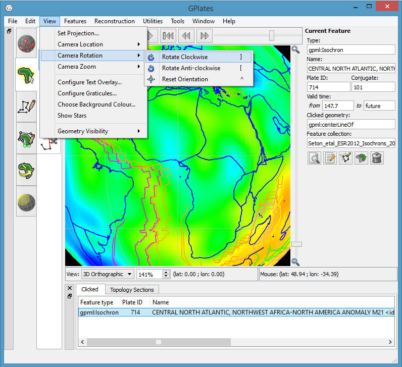
Some menu items use check boxes or tick marks to switch or choose operations. For example; Show Bottom Panel in the Window menu is activated by a small cross or tick that will be displayed next to the menu item when selected.
2.4. Tool Palette
The Tool Palette is used to control your view and interaction with the GPlates globe and maps. You may recognise the concept of tools from graphics editing software (e.g. drawing tools in Photoshop ) or GIS software (e.g. ArcGIS mapping tools).
The Tool Palette includes camera positioning tools, feature selection tools and drawing tools. A tool is activated by clicking on it; only one tool can be active at any time. The task panel will reflect the current tool that is activated.
Icon |
Tool |
Shortcut |
Operation |
|
Drag Globe |
D |
Drag to re-orient the globe. Shift+drag to rotate the globe |
|
Zoom In |
Z |
Click to zoom in. Shift+click to zoom out. Ctrl+drag to re-orient the globe |
|
Measure |
S |
Click to measure distance between points, or measure the selected feature’s geometry |
|
Choose Feature |
F |
Click a geometry to choose a feature. Shift+click to query immediately. Ctrl+drag to re-orient globe |
|
Digitise Polyline Geometry |
L |
Click to draw a new vertex. Ctrl+drag to re-orient the globe |
|
Digitise Multi-point Geometry |
M |
Click to draw a new point. Ctrl+drag to re-orient the globe |
|
Digitise Polygon Geometry |
G |
Click to draw a new vertex. Ctrl+drag to re-orient the globe |
|
Move Vertex |
V |
Drag to move a vertex of the current feature. You can still drag the globe around |
|
Insert Vertex |
I |
Insert a new vertex into the feature geometry |
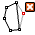 |
Delete Vertex |
X |
Remove a vertex from a multi-point, polyline or polygon geometry |
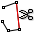 |
Split Feature |
T |
Click to split the geometry of the selected feature at a point to create two features |
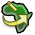 |
Modify Reconstruction Pole |
P |
Drag or Shift+drag the current geometry to modify its reconstruction pole. Ctrl+drag to re-orient the globe by holding down Ctrl |
|
Build New Topology |
B |
Create a new dynamically closing plate polygon by adding sections of other features that define a boundary |
|
Edit Topology Sections |
E |
Edit the selected topological feature’s sections |
|
Create Small Circle |
C |
Create small circles using mouse to define centre and radii, or enter manually, or generate centre from a stage pole |
The availability of certain tools will change depending on what you currently have selected. For instance, the Modify Reconstruction Pole tool can only be used once a feature to be modified has been selected with the Choose Feature tool. All of the geometry-editing tools are context-sensitive, and can be used to operate on an existing feature or geometry that you are in the process of digitising.
The tools are also accessible via the Tools menu which also shows the shortcut key for each tool. The Tools menu also contains a check box Use Small Icons that reduces the size of the tool icons in the Tool Palette. This is useful if your screen resolution is low enough to force the bottom tools off the screen - this can happen if you are using a low-resolution screen projector.
2.5. List of Menu Operations
-
A description of the operations within each menu will be explained in further detail in their respective chapters.
-
Shortcut keys are listed beside some menu items. On Mac OS, please substitute the Command (⌘) key in place of Ctrl.
|
|
Clicking on a menu item from the list below will take you to the appropriate chapter for further information |
2.5.1. File
-
Open Feature Collection [Ctrl+O]
-
Connect WFS
-
Manage Feature Collections [Ctrl+M]
-
Quit [Ctrl+Q]
2.5.2. Edit
-
Undo [Ctrl+Z]
-
Redo [Ctrl+Y]
-
Query Feature [Ctrl+R]
-
Edit Feature [Ctrl+E]
-
Delete Feature [Delete]
Deletes the currently chosen feature and removes it from the feature collection that contained it. Note that the feature collection is marked as modified but is not automatically saved to file (see the Loading And Saving chapter).
-
Preferences [Ctrl+Comma]
2.5.3. View
-
-
Set Location [Ctrl+Shift+L]
-
Move Up
-
Move Down
-
Move Left
-
Move Right
-
-
-
Rotate Clockwise []]
-
Rotate Anti-clockwise [[]
-
Reset Orientation [^]
-
-
-
Set Zoom
-
Zoom In
-
Zoom Out
-
Reset Zoom
-
-
Configure Text Overlay
-
Configure Graticules
-
Choose Background Colour
-
Show Stars
-
Geometry Visibility
-
Show Point Geometries
-
Show Line Geometries
-
Show Polygon Geometries
-
Show Multipoint Geometries
-
Show Arrow Decorations
-
2.5.4. Features
2.5.5. Reconstruction
-
Reconstruct to Time [Ctrl+T]
-
Step Backward One Frame [Ctrl+Shift+I]
-
Step Forward One Frame [Ctrl+I]
-
Specify Anchored Plate ID [Ctrl+D]
-
View Total Reconstruction Poles [Ctrl+P]
2.5.6. Utilities
-
Calculate Reconstruction Pole
-
Open Python Console [F12]
2.5.7. Tools
-
Use Small Icons
-
Drag Globe [D]
-
Zoom In [Z]
-
Measure [S]
-
Choose Feature [F]
-
Move Geometry [Y]
-
Move Vertex [V]
-
Insert Vertex [I]
-
Delete Vertex [X]
-
Split Feature [T]
2.5.8. Window
-
Open New Window [Ctrl+N]
Creates a new instance of GPlates. Currently each instance created this way is completely separate with its own main window and dialogs. Any program state such as files loaded prior to selecting New Window is not transferred across to the new instance. This feature is useful mainly for Mac OS X where it is not possible to run multiple instances of the same application from the Finder.
-
Show Layers [Ctrl+L]
-
Log
-
Full Screen [F11]
2.5.9. Help
-
View Online Documentation
-
About
3. Data File Types
3.1. Introduction
This chapter covers the visualisation techniques within GPlates: which image formats are able to be loaded into GPlates and how to go about doing this.
3.2. Rasters in GPlates
GPlates has the facility to display raster images on the globe.
GPlates can also reconstruct rasters back in geological time with the assistance of a set of static polygons (static meaning the shape of the polygons do not change in contrast to topological plate polygons which have dynamic shapes - see the Topology Tools chapter). For more information on reconstructing rasters please see the More on Reconstructions chapter.
3.2.1. What are raster images?
A raster image is one formed by a 2-dimensional rectangular grid coloured by points. A single point of colour in the raster image is known as a pixel. Each pixel is positioned at one of the grid-points, and every grid-point has a pixel positioned on it.
The ability to display raster images on the globe enables the user to superimpose any kind of imagery or gridded data (such as satellite imagery, topography, bathymetry etc) on the surface of the globe, to be viewed at the same time as reconstructible features.
The ability to reconstruct raster images on the globe enables the user to visualise the movement of raster data as if it were "cutout" and "attached" to a set of polygons with the movement of the respective cutout raster pieces dictated by the movement of the individual polygons. For more information on reconstructing rasters please see the More on Reconstructions chapter.
3.2.2. Which image formats does GPlates understand?
GPlates reads images in a variety of formats which can be roughly categorised into two groups:
RGBA images
These type of images have a Red, Green, Blue and optional Alpha value (usually 8-bits each) for each pixel in the image. Some of the supported file formats include JPEG (as known as JPG), PNG, TIFF, GIF. Formats like JPEG do not have transparency (the Alpha value) whereas other formats such as PNG support transparency. When raster images, containing transparent regions, are drawn on top of other rasters or vector geometries, the underlying rasters/geometries will be visible through the transparent regions. See the Layers chapter for more information on the visual ordering of rasters (or, more generally, layers). Some of these formats have inbuilt compression (such as JPEG) which result in smaller file sizes but can introduce compression artifacts depending on the compression quality. Other formats such as BMP do not have compression and can be quite large. Regardless of the file size the amount of memory used internally inside GPlates is the same for same-sized images.
Floating-point images
There also exist integer formats but the floating-point formats are much more common and useful in general. These images have one (or more) raster bands where each band has a single channel (a single float-point value per pixel in the image). Most images have a single raster band. Supported file formats include standard NetCDF formats. NetCDF file typically have the filename extension ".nc" or ".grd". These formats are not compressed and, since they are usually used in high-resolution scenarios, they can be quite large.
RGB and RGBA images can be visualised directly since they already contain colour values (Red, Green and Blue) per pixel. Floating-point images require a mapping from a float-point value to a colour value (RGB). This is done in the Raster options part of the raster layer. A new layer becomes visible in the Layers dialog for each raster loaded, or imported, into GPlates. For information on the Raster options please see the Layers chapter.
3.2.3. How do I load a raster image in GPlates?
To load a raster image into GPlates it must first have a GPML file associated with it. This is done by importing the raster into GPlates. This only needs to be done once for each raster. After that you can simply load the GPML file (created during the import process) into GPlates like you would a regular feature collection (see the Loading And Saving chapter).
3.2.4. How do I import a raster image into GPlates?
A global raster image is imported using the operation Import Raster in the GPlates File Menu. This will show a dialog requesting the user to choose the raster image file to be loaded.

If the selected raster image has been previously imported (and hence has an associated GPML file) then a message pops up giving you a choice to:
-
use the existing GPML (effectively cancelling the import process and instead loading the existing GPML file), or
-
continue with the import process (this means the existing GPML file will get overwritten if the you later decide to save the file), or
-
cancel the import process and not load anything.

Next you will be asked to enter the raster band name.

The default choice is band_1. You can also type a new band name that describes the purpose or category of data contained in the raster. This is useful when you need to identify a specific raster band in the Raster options of the raster layer (for example to change the raster colour palette). Currently the import process does not support importing of multi-band rasters so there’s only one raster band per raster.
|
|
Previous versions of GPlates treated age-grid rasters (a floating-point raster where each pixel represents the age of the crust covered by the pixel) differently depending on whether you were planning to reconstruct another raster with the assistance of that age grid or whether you simply wanted to visualise the age grid as you would any other raster. This distinction, which required specifying age as the band name in the former case, is no longer required since the band name is no longer used to distinguish the two use cases. In other words, an age-grid raster can be visualised, or used to assist reconstruction of another raster, or both without any changes. See the Layers chapter for more information on using an age-grid raster for reconstruction. |
Next you will be asked to confirm the global georeferencing information or enter new georeferencing information to control where on the globe your raster should be positioned.
GPlates is able to display global (covering the whole globe) and regional (covering a user-specified zone) raster images. GPlates assumes that a global image spans the longitude range of -180 degrees to +180 degrees and the latitude range of -90 to +90 degrees, and positions the image accordingly. For regional rasters a surface extent of any longitude and latitude range for the raster can be specified, enabling rasters of a smaller size to be correctly sized and positioned.
The default georeferencing covers the whole globe. You can edit the georeferencing directly using latitude-longitude aligned bounds or you can use the advanced option to specify an arbitrary affine transform.
The advanced option is enabled by ticking the Show affine transform parameters (advanced) check box. With these advanced options you can also rotate or skew your raster. The affine transform is defined as x and y components of pixel width and height and effectively determine the direction, in latitude-longitude space, that the horizontal and vertical axes of the raster image will map to when positioned on the globe. If the horizontal and vertical raster image directions are orthogonal (perpendicular) to each other, in latitude-longitude space, then you’ll have a rotation otherwise you’ll have a skew. The default latitude-longitude aligned bounds can be thought of as a non-rotated, non-skewed image. For a more detailed explanation of these parameters see the Wikipedia article on ESRI world files.
|
|
Currently GPlates does not perform datum conversions or image map projections. So the latitude-longitude coordinates (generated by the georeferencing transform), that determine the positioning of the raster on the globe, do not go through a further datum transformation or map projection. |
Next you will asked if you want to save the raster to an existing, or new, feature collection.
|
|
Raster images currently do not display while using map projections other than the 3D Globe. |
3.3. Time-Dependent Raster Sets
3.3.1. What is a time-dependent raster set?
GPlates has the facility to display time-dependent raster images (that is, raster images whose pixels change according to the reconstruction time).
In reality, what GPlates is displaying is a time-sequence of raster images — each image in the sequence corresponding to a particular instant in geological time. The user can instruct GPlates to load a sequence of raster image files contained within a single folder, and GPlates will display the appropriate image for the reconstruction time. As the user changes the reconstruction time, the raster image displayed on the globe will update accordingly.
3.3.2. How do I load an existing time-dependent raster set?
A time-dependent raster set is loaded using the operation Import Time-dependent Raster in the GPlates File Menu. This will show a dialog where the exact sequence of files can be assembled.
Click the Add Directory button to choose a folder containing time-dependent rasters.
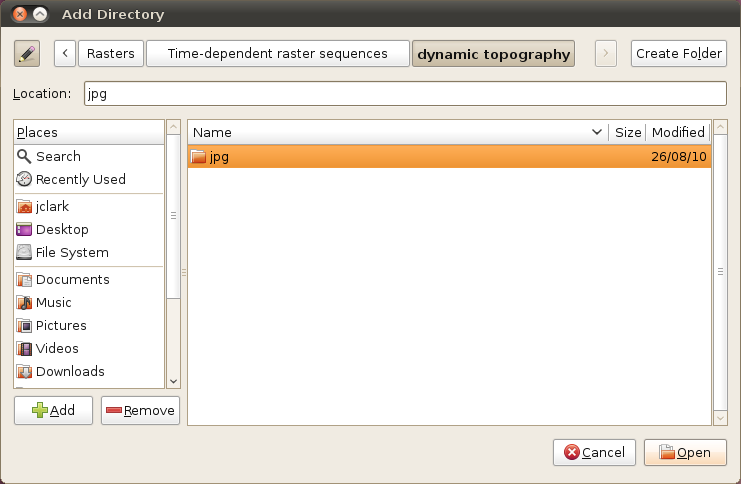
This will fill the Import Raster file sequence dialog with those file names.

A time-dependent raster set is treated the same as a regular raster image by GPlates, in the sense that when a new raster image or time-dependent raster set is loaded, it will create a single layer.
The same georeferencing and raster band options apply to time-dependent rasters as they do to single rasters.
|
|
A time-dependent raster set can be reconstructed just as a single (non time-dependent) raster can. In this case the raster will be cutout into pieces according to static polygons which move independently across the globe (just like a single raster) but the image itself (that’s projected onto those pieces) will change over time as defined by the time-dependent sequence of images. |
Links to existing time-dependent raster sets may be found on the "Downloads" page of the GPlates website: http://www.gplates.org/downloads.html
3.3.3. How can I create my own time-dependent raster set?
As already described, a time-dependent raster set is actually a sequence of raster image files contained within a single folder. The name of the folder is unimportant, but the raster image files must adhere to three rules:
-
Each raster image file must be in a raster image format which GPlates is able to handle. Any format available to a single imported raster is also available to a time-dependent raster sequence.
-
Each raster image file must have a file-name of the form ‘`*-_time_.jpg'' or ``*_time.jpg’', where time is an integer value representing a number of millions of years before the present day — this is the instant of geological time to which that raster image corresponds. Note that “.jpg” is just an example - it could be any valid file format extension.
For example, the files:
-
topography-0.jpg
-
topography-1.jpg
-
topography-2.jpg
together form a time-dependent raster set. In the above example the image lasts from 0-2Ma and has "time steps" of 1Ma.
Note that the filename prefix does not need to be common across all the filenames. For example:
-
b-topography-0.jpg
-
a-topography-1.jpg
-
c-topography-2.jpg
will produce the same sequence ordered by time.
4. Loading And Saving
Before you load any data into GPlates the globe will appear as a blank sphere; in order to start with GPlates you will need to know how to load, save and unload data.
|
|
You can still manipulate the view of the globe even though it’s blank. See Chapter 5, Controlling the View for more details. |
4.1. Introducing Feature Collections
When a data file is loaded in GPlates, it is loaded in the Feature Collection. All data in GPlates are represented as features (e.g. MOR, volcano, etc) — whether geological data or reconstruction data. Regardless of the file format, all features will be contained internally as GPlates features. However GPlates will remember the name and format of the file for saving.
All data loaded in GPlates are represented as features; all data-manipulation functions are operations upon features. GPlates offers a rich variety of feature types, enabling GPlates to handle geographic, paleo-geographic, geological and tectonic data. Basin, Coastline, Craton, Fault, Hotspot, Isochron, Mid-Ocean Ridge, Seamount, Subduction Zone, Suture and Volcano are just some of the many feature types handled by GPlates. The meta-data attributes of data are contained within named properties of the features.
GPlates is able to load and save a number of data-file formats (e.g. PLATES4). When a data file is loaded in GPlates, the data will be converted to the appropriate types of features and placed into a Feature Collection. One Feature Collection in GPlates corresponds to one data file on the disk. Even though the data have been converted to GPlates features, GPlates will remember the name and original format of the file for saving.
When the features are saved, they will be converted back to their original data format. It is also possible to save features into different data formats using the "Save As" or "Save a Copy" buttons in the Manage Feature Collections dialog. To specify a different file format, change the file-name extension (e.g .dat .pla etc) to the extension for the desired format.
4.2. How to Load a File
There are several ways to load a data file or collection of files into GPlates.
4.2.1. The Open Feature Collection menu item
-
Go to the File Menu in the menu bar.
-
Scroll down to Open Feature Collection (shortcut: Ctrl+O).
-
A classic File Open dialog window will appear; select the file to be loaded.

|
|
You can open multiple files at once via this dialog. Hold down Ctrl to select additional files, then click Open. |
4.2.2. Drag and Drop
-
Open your file browser to the directory containing the files you want to load.
-
Select the files you are interested in; Multiple selection is usually possible by dragging a rectangle around files or holding Ctrl while clicking.
-
Drag these files into the GPlates Main Window.
|
|
It is also possible to add CPT files to the Manage Colouring dialog in this way. |
4.2.3. The Open Recent Session menu
Whenever you close GPlates, it automatically remembers which set of files you were working on last time. You can resume your previous session by using the menu.
-
Go to the File Menu in the menu bar.
-
Scroll down to the Open Recent Session submenu.
-
Select the menu entry corresponding to the set of files you want GPlates to load.
An entry for each prior session of GPlates can be identified by the number of files that were loaded, the name of the directory that all the files have in common, and the date they were last in use. Connections between different Layers that are loaded will also be saved, however please note that colouring settings and other Layer-specific settings (e.g. VGP Visibility) are not currently remembered and must be restored manually.
4.2.4. How do I load a raster image in GPlates?
To load a raster image into GPlates it must first have a GPML file associated with it. This is done by importing the raster into GPlates. This only needs to be done once for each raster. After that you can simply load the GPML file (created during the import process) into GPlates like you would a regular feature collection.
For information on how to import a raster please see the Data File Types chapter.
4.3. The Manage Feature Collections Dialog
This dialog window enables you to load new files, and save, reconfigure and unload currently-loaded files. This is where you will find any file-specific operations. To control how GPlates uses the data from those files, please see the Layers chapter and related functionality.
-
Go to the File Menu in the menu bar.
-
Click on Manage Feature Collections menu item (shortcut: Ctrl+M).

|
|
A single row in the table corresponds to one file. |
| Column Name | Function |
|---|---|
| File Name | The name of the file on disk |
| File Format | The file format type |
| Actions | A collection of operations relevant to this file |
|
|
If you place your mouse over the file name a tool tip appears indicating the directory the file is located in. |
4.3.1. Saving a file
There are three different ways to save a file in GPlates.
The Manage Feature Collections dialog contains a table of controls and status information about the feature collections that are loaded in GPlates; each row corresponds to a single feature collection, and lists file name, format and available actions.

Item |
Name |
Function |
|
File Properties |
Edit the file’s configuration |
|
Save |
Save the file using the current name |
|
Save As |
Save the file using a new name and/or format |
|
Save a Copy |
Save a copy of the file with a different name |
|
Refresh |
Reload the file from disk |
|
Eject |
Unload the file from GPlates |


Save…
-
Saves the current file with its current name.
-
Will overwrite previous contents of the file.
|
|
This is useful when you have modified your file and are happy to save these changes. |
|
|
Do not edit the file in two separate programs simultaneously (e.g. GPlates and a text-editor) |
 Save As…
Save As…
-
Saves the current file with a new name.
-
Will leave the previous file intact.
-
Will load the new file in place of the old file.
-
Gives you the opportunity to change the file format.
|
|
This is useful when you want to edit a copy of a file without changing the original. |
 Save a Copy…
Save a Copy…
-
Saves a copy of the current file with a new name.
-
Will leave the previous file intact.
-
Will not replace or unload the current file.
-
Gives you the opportunity to change the file format.
|
|
This is useful for making backups of your work as you go. |
4.3.2. Saving all modified files
If a file has been modified in GPlates, it will appear with a red background colour to highlight it. As a convenient shortcut for saving all your changes in one go, the Manage Feature Collections dialog has a Save All button.
-
Have been modified in GPlates since they were last loaded/saved.
-
Have a file name.
|
|
The "Save All" button does not save newly created feature collections (highlighted in orange) which have not been saved with a file name yet. This is to avoid ambiguity in case you have created many new feature collections, some possibly for temporary work, which have not yet been named. |
4.4. File Errors
4.4.1. Introduction
File read errors may occur when attempting to load data from file (or some other data source, such as a database). GPlates developers have done their best to notify the user of the specifics of the error so corrections can be made.
4.4.2. Error Categories
It is anticipated that file input errors may fall into four categories:
-
Warning
-
Recoverable error
-
Terminating error
-
Failure to begin
When you load a file which causes warnings, GPlates will display a warning icon
 in the status bar. You can click it to open the File Errors dialog for more information, or click the View Read Errors entry on the File menu. For more serious errors, GPlates will open the dialog immediately on loading.
in the status bar. You can click it to open the File Errors dialog for more information, or click the View Read Errors entry on the File menu. For more serious errors, GPlates will open the dialog immediately on loading.
Warning
-
A warning is a notification of a problem (generally a problem in the data) which required GPlates to modify the data in order to rectify the situation.
-
Examples of problems which might result in warnings include:
-
Data which are being imported into GPlates, which do not possess quite enough information for the needs of GPlates (such as total reconstruction poles in PLATES4 rotation-format files which have been commented-out by changing their moving plate ID to 999).
-
An attribute field whose value is obviously incorrect, but which is easy for GPlates to repair (for instance, when the Number Of Points field in a PLATES4 line-format polyline header does not match the actual number of points in the polyline).
-
-
A warning will not have resulted in any data loss, but you may wish to investigate the problem, in order to verify that GPlates has corrected the errors in the data in the way you would expect; and to be aware of incorrect data which other programs may handle differently.
Recoverable error
-
A recoverable error is an error (generally an error in the data) from which GPlates is able to recover, although some amount of data had to be discarded because it was invalid or malformed in such a way that GPlates was unable to repair it.
-
Examples of recoverable errors might include:
-
When the wrong type of data encountered in a fixed-width attribute field (for instance, text encountered where an integer was expected).
-
-
When a recoverable error occurs, GPlates will do the following:
-
Retain the data it has already successfully read.
-
Discard the invalid or malformed data (which will result in some data loss).
-
Continue reading from the data source. GPlates will discard the smallest possible amount of data, and will inform you exactly what was discarded.
-
Terminating error
-
A terminating error halts the reading of data in such a way that GPlates is unable to read any more data from the data source.
-
Examples of terminating errors might include:
-
A file-system error.
-
A broken network connection.
-
-
When a terminating error occurs, GPlates will retain the data it has already read, but will not be able to read any more data from the data source.
Failure to begin
-
A failure to begin has occurred when GPlates is not even able to start reading data from the data source.
-
Examples of failures to begin might include:
-
The file cannot be located on disk or opened for reading.
-
The database cannot be accessed; no network connection could be established.
-
-
In the event of a failure to begin, GPlates will not be able to load any data from the data source.

4.5. Unsaved Changes
4.5.1. Introduction
GPlates keeps track of any changes you make to files while they are loaded. To remind you that some feature collections have unsaved changes, GPlates will display the icon in the status area. Hover over the icon to see a list of modified files, or click it to open the Manage Feature Collections dialog.
4.5.2. Closing GPlates with unsaved changes
If you close GPlates while there are still unsaved changes, GPlates will ask you to confirm this action, indicating which files have been modified and allowing you to select one of three actions to resolve the situation.

-
No files will be saved. Any changes made since you last saved the file will not be kept.
-
GPlates will close.
-
GPlates will not close.
-
This gives you an opportunity to go back and manually save the files you wish to keep, and discard the rest.
-
GPlates will save every file that has been modified but not yet saved.
-
In the event of a new feature collection which has not yet been given a file name, you will be prompted to give each one a name using the standard save dialog. However, this may lead to ambiguity about which feature collection is being saved, and it is advised to use the "Don’t Close" option to carefully examine the situation.
-
If all files were saved successfully, GPlates will close.
The Unsaved Changes dialog may also be triggered when using the Open Recent Session functionality. If the files you currently have open have changes made to them, the act of opening a new session will replace them, and GPlates will warn you about this in the same way.
5. Controlling The View
This chapter provides an overview of how to manipulate the view of the globe, and any displayed data or features.
5.1. Reconstruction View
The Reconstruction View is the region of the GPlates interface which deals with plate reconstructions back through time and is displayed below.
| Name | Description |
|---|---|
| Time Controls | A collection of user-interface controls for precise control of the reconstruction time and animations. |
| Zoom Slider | A mouse-controlled slider which controls the zoom level of the Globe View camera. |
| View Controls | A drop-down control for selecting the projection to be used for the view, and a precise percentage control for the camera zoom level |
| Camera Coordinate | An information field which indicates the current globe position of the Globe View camera |
| Mouse Coordinate | An information field which indicates the current globe position of the mouse cursor |
5.2. Tool Palette
The first two tools in the Tool Palette control your view of the GPlates globe or map. The Tool Palette includes camera positioning tools, feature selection tools and drawing tools. A tool is activated by clicking on it; only one tool can be active at any time. The Current Feature Panel will change to reflect the current tool that is activated.
Icon |
Tool |
Shortcut |
Operation |
|
Drag Globe |
D |
Drag to re-orient the globe. Shift+drag to rotate the globe |
|
Zoom In |
Z |
Click to zoom in. Shift+click to zoom out. Ctrl+drag to re-orient the globe |
5.3. View Menu
The View Menu enables the user to manipulate the globe, and includes the following options:
Clicking this menu item will open a dialog allowing you to select what projection GPlates should use to display data. A shortcut for this functionality can be found on the bottom of the Reconstruction View.
These menu items permit control of the camera position in order to view the globe.
5.3.1. Configure Text Overlay
GPlates can display the current reconstruction time within the globe area. Selecting this menu item opens the Configure Text Overlay dialog.

You can choose what text should be displayed, using %f as a placeholder for the reconstruction time. The text can be displayed in any of the four corners of the view.
5.3.2. Configure Graticules
With this menu item, the graticule spacing can be configured to use a different grid spacing than the default 30 degrees. The colour can also be changed if better contrast with a background raster is needed.

5.3.3. Choose Background Colour
This option can be used to select the background colour of the globe (or map in the map view).
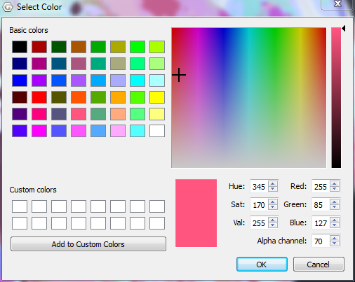
|
|
If the value entered in the Alpha channel option is less than 255 then the globe will be semi-transparent and you will be able to see the rear of the globe (and geometries/rasters on the rear) through the front of the globe. |
5.3.4. Geometry Visibility
Selecting "Show Point/Line/Polygon/Multipoint Geometries" will prevent feature geometries of those types from being drawn on the globe.
Selecting "Show Arrow Decorations", when a Velocity layer is active, can be used to control the display of the velocity arrows.
5.4. Window Menu
The Window Menu enables the user to control the windows GPlates opens to display aspects of your data, and includes the following options:
Creates a new instance of GPlates. Currently each instance created this way is completely separate with its own main window and dialogs. Any program state such as files loaded prior to selecting New Window is not transferred across to the new instance. This feature is useful mainly for Mac OS X where it is not possible to run multiple instances of the same application from the Finder.
This option shows and hides the Layers window.
This option allows you to show or hide the Clicked Feature and Topology Sections tables.
This option opens a dialog that:
-
Displays low-level debug, warning and error messages in a dialog window.
-
Supports filtering of log messages with a text string entered by the user.
-
Supports copy and pasting log messages in order to, for example, email bug reports to the GPlates developers.
-
Removes duplicate messages - shows message once along with a count of the number of identical messages.
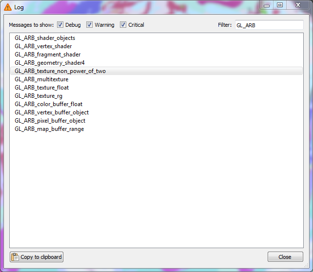
Makes the GPlates Main Window fill the entire screen, and hides most of the user interface elements such as the Tool Palette and Task Panel. A shortcut for this mode is the F11 key. This mode is ideal for doing presentations.
Tools can still be accessed via their keyboard shortcuts. While in full screen mode, a new GPlates logo button will appear in the top left hand corner. If you need to access the Main Menu, click this button.
To leave Full Screen mode, you can:
-
Press F11 again.
-
Press Esc.
-
Click the Leave Full Screen button in the top right corner.
5.5. Manage Colouring
Currently, by default the geometry colouring is controlled by Python plugin. Go to Chapter 19: Python and read paragraph 3.1. Draw Style plugins for details.
|
|
The following content of this paragraph is deprecated. It is only valid when you start GPlates with "--no-python" command line option. If you have no idea about the "--no-python" option, it is very likely that you should skip this paragraph and go to Chapter 19. |
The Manage Colouring operation, found on the new Features menu, opens the Manage Colouring dialog. It allows the user to customise how feature geometries are coloured.

To change the default colouring method for all feature collections, select (All) from the drop-down box at the top, then choose from one of the four major categories:
-
Colour by plate ID
-
Colouring all features with a single user-specified colour.
-
Colour by feature age (the time of the feature’s creation relative to the current view time)
-
Colour by feature type
Once you have done that, a number of different options will be available in the right-hand pane. Some of these support the inclusion of user-specified Colour Palette Files (.CPT). A few sample CPT files are included with the sample data.
For further customisation, you can choose to override these default colouring schemes for individual feature collections. Select the feature collection from the drop-down box, then uncheck Use Global Colour Scheme. You can now select a colouring scheme to be used for geometry originating from that feature collection.
6. Layers
6.1. Introduction
This chapter covers the layers system, how they are created, what they do, how they are visualised and the various types of layers.
6.2. Layers in GPlates
Layers provide a way to connect the various processing capabilities of GPlates to data sources (such as loaded feature collections). The outputs of these layers can then be visualised directly in the globe and map views and/or passed to the input of other layers for further processing.
6.3. What’s the difference between a layer and a file?
A file contains a collection of features (a feature collection).
A layer processes one or more inputs into an output. Inputs to a layer can include, but are not necessarily restricted to, feature collections. For example some types of layers, such as the Reconstructed Geometries layer, accept both feature collections and the output of another layer.
In the case of the Reconstructed Geometries layer:
-
the feature collection input contains (in the feature properties themselves) both the geometries to be reconstructed and the information on how to reconstruct them (such as reconstruction plate ID),
-
the layer input (in this case the output of a Reconstruction Tree layer) contains the rotations needed to perform the reconstruction,
-
the layer itself does the actual reconstruction and generates the reconstructed geometries, and
-
the layer output contains the reconstructed features.
The reason the rotations come from the output of another layer rather than a feature collection (containing rotation features) is because a rotation hierarchy needs to be generated from the rotation features themselves and so this process is performed by a different type of layer (the Reconstruction Tree layer). See the More on Reconstructions chapter for more information about rotation hierarchies.
The output of most types of layers (exceptions include Reconstruction Tree layers) contain geometries and hence can be visualised in the globe and map views.
6.4. The Layers dialog
The Layers dialog is usually displayed automatically when you first load a feature collection. To show/hide the dialog, select the Show Layers menu item in the Window menu or use the Ctrl+L shortcut key.
The Layers dialog contains all layers and is the central place to configure layer visibility, draw order, input connections and layer-specific options.
The collapsed view of each layer in the dialog shows a layer name, type and colour. The type and colour are associated (for example, a green layer is always of type Reconstructed Geometries). The layer name depends on how the layer was created (see the Creating layers section for more details).
6.4.1. Changing layer visibility
The visibility of each layer can be individually disabled (or enabled) by clicking the icon to the left of the layer name.
|
|
Some types of layers (such as the Reconstruction Tree layer) do not have a visibility icon . This is because those layer types do not output geometries and hence there is nothing to visualise in the globe and map views. |
Each layer contains a small black arrow
that can be clicked on to expand the layer and show the input connections and any layer-specific options. Once expanded you can click on the
 symbol to collapse the layer again.
symbol to collapse the layer again.

6.4.2. Changing layer input connections
Every layer has an "Input channels" section that displays the current inputs and also allows the user add, remove or change inputs to each layer. Each layer type can have different types of input channels. In the Reconstructed Geometries example above there are two types of input channel, one labelled "Reconstructable features" and the other labelled "Reconstruction tree". The types of input channel are specific to each layer type and will be covered in greater detail in the Types of layers section.
Input connections can be:
-
added using the "Add new connection" option, and
-
removed using the
 symbol to the right of each existing connection.
symbol to the right of each existing connection.
6.4.3. Enabling and disabling a layer
In the "Manage layer" section of each layer you can Enable and Disable the layer.
|
|
When a layer is disabled it is greyed out in the Layers dialog and cannot be changed until it is enabled again. |
The "Disable layer" and "Enable layer" options determine if a layer does any processing or not. If a layer is disabled then that layer is effectively switched off and nothing is generated or output by that layer. It also means nothing will be drawn in the globe and map views for that layer (regardless of that layer’s visibility). And it means any other layer receiving input from that layer will receive nothing.
|
|
For example, if the visibility of a Reconstructed Geometries layer is turned off but the layer is still enabled then feature geometries are still reconstructed internally by GPlates for that layer (they are just not displayed). This is useful if you want the output of a Reconstructed Geometries layer to feed into the input of another layer but you don’t want the reconstructed geometries to be visible. Currently there aren’t any good examples of when you might want to do this but there will be in the near future. |
6.4.4. How do I make one layer draw on top of another?
Layers are drawn onto the globe and map views in the order in which they are displayed in the Layers dialog. Layers at the top are drawn on top of layers below them.
To change the visual ordering of a layer simply drag it onto another layer.
|
|
Either the unexpanded part of the layer (the part containing the layer name and type) or the coloured bar on the left (expanded or unexpanded) can be grabbed in this way. You can still grab a layer when it is expanded - you just need to grab in those areas of the layer. Typically the mouse cursor changes to a hand grab icon over areas that allow layer dragging. |
In this example, the raster layers are at the bottom and hence are drawn underneath the other layers. And the user has selected only one raster to be visible (the visibility icon is on for only one raster layer).
|
|
The layer positions of Reconstruction Tree layers are not important since they produce no visible output. |
Previous versions of GPlates required layers containing vector geometries to be drawn on top of any raster layers otherwise the raster layers would obscure them (especially if they were global rasters). However GPlates now supports adjusting raster transparency (and intensity) individually per raster layer - see Reconstructed Raster Layer for more details. The following image shows a raster layer (with opacity set to 0.64) on top of layer containing coastlines - the coastlines are under the raster but are partially visible through it.
6.5. Creating layers
There are two ways in which a layer can be created. Either automatically by GPlates when the user loads a feature collection or explicitly when the user creates a new layer.
6.5.1. Automatically created layers
When you load a feature collection usually one (or more) layers are created.
Loading these feature collections…

…will result in these layers being automatically created (in this case one layer per feature collection)…

|
|
The layer name is obtained from the feature collection filename. |
|
|
Unloading
|
In some situations loading one feature collection can create two layers.
Here one feature collection containing both Topological Closed Plate Polygon features and the regular features referenced by them is loaded…

…and two layers are automatically created…

One layer reconstructs the regular features that are referenced by the plate polygons and the other layer does the work of stitching the features together, intersecting them and creating the dynamic polygon boundary.
|
|
Because there are two layers, the dynamic plate polygon boundaries can be made visible while the features used to construct the dynamic boundary can be made invisible. |
6.5.2. Layers created by the user
Layers can be explicitly created by the user.

After selecting Add new layer… at the top of the Layers dialog you can then select the type of layer you want to create. Here is example of creating a new Calculated Velocity Fields layer.

A new layer is then created and inserted at the top of the layer stack.
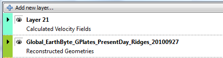
|
|
The layer name will be "Layer" suffixed with an integer (for example, "Layer 21"). It is not based off a feature collection filename because it is not automatically created when a feature collection is loaded. |
|
|
The new layer’s input channels are all unconnected and you will need to make the connections explicitly in order for the layer to function correctly. It is OK to leave a layer in an unconnected state - it will then simply do nothing. |
6.6. Types of layers
There are various types of layers each represented by a different colour in the Layers dialog.
Each layer provides a different type of functionality, has different types of inputs and generates different outputs.
6.6.1. Reconstruction Tree Layer
This layer combines rotation features from one or more feature collections to form a reconstruction tree or rotation hierarchy (see the More on Reconstructions chapter for more information about rotation hierarchies). This rotation hierarchy can then determine the equivalent absolute rotation of a plate relative to the top of the hierarchy (the anchored plate).
Reconstruction Tree Options
A Reconstruction Tree layer has the following configuration options:

Since this type of layer does not produce visible geometries it does not have the visibility icon to enable/disable visibility.
Instead it has the icon
 to set/indicate the default Reconstruction Tree layer - see Default Reconstruction Tree below.
to set/indicate the default Reconstruction Tree layer - see Default Reconstruction Tree below.
The Input channels section has one type of input:
-
"Reconstruction features" which is a list of input feature collections that contain rotation features.
|
|
More than one feature collection can be connected to the input of a Reconstruction Tree layer. For example, one feature collection may represent absolute rotations while another represents relative rotations. When they are both input to the same Reconstruction Tree layer they are combined together inside the layer to form a single rotation hierarchy. |
|
|
If there are no rotation features in any input feature collections then no rotation hierarchy is generated which means nothing using this Reconstruction Tree layer will rotate or reconstruct. |
|
|
If an input feature collection contains both rotation and non-rotation features then the non-rotation features are simply ignored (by the Reconstruction Tree layer) since they cannot contribute to a rotation hierarchy. The non-rotation features will however have resulted in the automatic creation of a Reconstructed Geometries layer (along with the automatic creation of this Reconstruction Tree layer). So the non-rotation features won’t be ignored altogether - they are just ignored by the Reconstruction Tree layer. In turn, the Reconstructed Geometries layer will ignore the rotation features. |
View Total Reconstruction Poles displays a dialog to view a variety of information about the reconstruction poles and the plate hierarchy for that particular Reconstruction Tree layer (at the current reconstruction time). See the Reconstructions chapter for more information on that dialog.
Default Reconstruction Tree
One fundamental difference between Reconstruction Tree layers and other types of layers is you can set a default Reconstruction Tree layer. Only one Reconstruction Tree layer can be the default and you can tell which one is the default because it will be the only layer with the
 icon visible next to the layer name.
icon visible next to the layer name.
Selecting another Reconstruction Tree layer with no visible
 icon will make it the new default.
icon will make it the new default.

When a feature collection (containing rotation features) is loaded, its associated Reconstruction Tree layer becomes the new default Reconstruction Tree layer. If you want your previous default Reconstruction Tree layer to remain as the default (when subsequent rotation files are loaded) you will need to check the Keep as default tree upon file open check box. This prevents subsequently loaded Reconstruction Tree layers from becoming the default.

The default Reconstruction Tree layer is only applicable if another layer (such as a Reconstructed Geometries layer) requires a Reconstruction Tree input and has not explicitly connected one to its input.
|
|
If all layers with a Reconstruction Tree input have an explicit user connection then the default Reconstruction Tree layer effectively does not apply. However as soon as the user disconnects a Reconstruction Tree input on any layer, the default Reconstruction Tree layer will again apply. |
6.6.2. Reconstructed Geometries Layer
This layer reconstructs features from one or more feature collections using the current reconstruction time. Typically for each input feature geometry there is a corresponding reconstructed geometry (a rotated version of the present-day geometry). This layer is designed to handle different reconstruction methods in the one layer type. Examples of reconstruction methods include rigid plate rotation and half-stage rotation (such as at a Mid-Ocean Ridge).
In order to rotate the present-day geometries of features, a rotation hierarchy is required and this is obtained by connecting a Reconstruction Tree layer.
Reconstructed Geometries Options
A Reconstructed Geometries layer has the following configuration options:

The visibility icon determines whether the reconstructed geometries are drawn in the globe and map views.
The Input channels section has two types of input:
-
"Reconstructable features" is one or more feature collections containing reconstructable features. These are features that have geometry and have properties that provide enough information, aside from a rotation hierarchy, for GPlates to be able to reconstruct their geometry (such as a reconstruction plate ID).
-
"Reconstruction tree" is zero or one Reconstruction Tree layer. This input layer provides the rotation hierarchy that enables GPlates to reconstruct the features in the Reconstructable features input channel. If there is no Reconstruction Tree layer connected then the default Reconstruction Tree layer is used (see the section on Reconstruction Tree Layer for more details on the default Reconstruction Tree).
The following is an example of an implicit connection to the default Reconstruction Tree layer (because there is no explicit connection)…

…if you then changed which layer was the default Reconstruction Tree layer then the new default would be implicitly connected. This is useful if you have a lot of Reconstructed Geometries layers open and you want to change the Reconstruction Tree layer that they all use without having to reconnect each layer individually. In this case you would just need to change the default Reconstruction Tree layer.
On the other hand if you explicitly connect a Reconstruction Tree layer then the default is ignored (until you explicitly disconnect it).
Note that, in this example, "Add new connection" is disabled (and greyed out) since only one Reconstruction Tree input connection is allowed. You can still have multiple rotation feature collections as input to a Reconstruction Tree layer though.
Set VGP visibility displays a dialog to specify how Virtual Geomagnetic Pole (VGP) features are displayed. This option only applies to VGP features - for other feature types these settings are ignored.
Draw Style Setting displays a dialog to control the colouring of features - see Manage Colouring
The Filled polygons check box can be selected to colour fill features containing polygon geometries. Currently the colour of each filled polygon will be the same as the polygon outline colour (ie, same colour as unfilled polygons).

The following image shows filled polygons for the static polygons in the GPlates sample data.

6.6.3. Reconstructed Raster Layer
This layer can display a single raster feature (containing a single raster image or a time-dependent sequence of raster images) in the following configurations:
-
a raster (or time-dependent raster sequence) that is not reconstructed, or
-
a raster (or time-dependent raster sequence) that is reconstructed using a set of static polygons, or
-
a raster (or time-dependent raster sequence) that is reconstructed using a set of static polygons and an age grid.
|
|
Rasters are displayed at the highest resolution available for the current monitor screen size and amount of view zoom. As you zoom in, higher resolutions versions of the original raster are progressively loaded and displayed until the resolution of the original raster is exceeded. |
|
|
Rasters are displayed both the Globe and Map views. Previous versions of GPlates only displayed rasters in the Globe view. |
Reconstructed Raster Options
A Reconstructed Raster layer has the following configuration options:
The visibility icon determines whether the raster is drawn in the globe and map views.
The Input channels section has three types of input:
-
"Reconstruction tree" is zero or one Reconstruction Tree layer. This input layer provides the rotation hierarchy that enables GPlates to reconstruct the static polygon features in the Polygon features input channel. If there is no Reconstruction Tree layer connected then the default Reconstruction Tree layer is used (see the section on Reconstruction Tree Layer for more details on the default Reconstruction Tree).
-
"Reconstructed polygons" is zero, one (or more) Reconstructed Geometries layers. The features in the Reconstructed Geometries layers should contain static polygon features (the static meaning the polygon shapes don’t change) and should contain a reconstruction plate ID property on each polygon feature. If there are no polygon features then the raster is not reconstructed.
-
"Age grid raster" is zero or one Reconstructed Raster layer containing an age-grid raster. Each pixel of the age grid raster is a floating-point value representing the age of present-day oceanic crust.
|
|
Previous versions of GPlates required the age grid to be in a special age grid layer type and required a special band name for the age grid raster. GPlates no longer has these requirements - an age grid raster is no longer a special case raster - it is just another raster like any other. |
Opacity controls the transparency of the raster allowing layers drawn underneath a raster layer to become visible through the raster to varying degrees.
Intensity differs from transparency in that it only darkens the raster but does not allow layers underneath to become visible through the raster.
If the raster is non-RGBA (such as a floating-point NetCDF raster) then there are extra options in the Raster options section related to colour palettes.

In the "Raster options" section you can configure the colour palette, for a specific raster band, used to convert each floating-point pixel value to an RGB(A) colour value by selecting a CPT file. Note that this only applies to rasters that are not already in RGB(A) format - see the Data File Types chapter for more information on raster formats. CPT files come in two forms - categorical and regular. Categorical is typically used for non-numerical data (where interpolation of values is undefined). Regular is for numerical, continuously-varying data and is more applicable for rasters. The regular CPT file allows the user to map floating-point pixel values to colours with linear interpolation inbetween.
Selecting "Use Default" will map floating-point pixel values to a small set of pre-defined arbitrary colours. Pixel values two standard deviations away from the mean pixel value will be continously mapped to the small range of colours (with linear interpolation between the colours).
|
|
There is no colour palette option for an RGBA raster. |
Configuring a raster that is not reconstructed
This is the default configuration where no input channels are connected (except the raster feature itself).
The raster is rendered as a non-rotating (or non-reconstructing) georeferenced raster (in this example a global raster). Changing the reconstruction time makes no difference unless the raster feature is a time-dependent raster in which case the image itself will change over time (but will still remain stationary on the globe)…

Configuring a raster that is reconstructed using static polygons
This configuration does everything the above configuration does (including resolving a time-dependent raster over time) in addition to reconstructing the raster.
The reconstruction is peformed using a set of static polygons. Conceptually the single raster image (or time-resolved raster image for a time-dependent sequence) is cookie cut into multiple polygon-shaped pieces using the present-day location of each static polygon. Then each polygon is reconstructed using its reconstruction plate ID. As each polygon is reconstructed back in time it rotates independently (for polygons with different plate IDs) and transports its cookie-cut piece of raster image with it.
Only polygons whose valid time range (between age of appearance and disappearance) includes the current reconstruction time will be rendered. This is most noticeable near mid-ocean ridges where long thin polygons adjacent the ridge appear/disappear as you go fowards/backwards in time to simulate accretion or crust material at the mid-ocean ridge. This is also the reason why a reconstructed global raster covers the entire globe at present-day but covers a progressively smaller area of the globe as you reconstruct back in time.
|
|
Currently polygons (and their associated cookie-cut raster pieces) with higher plate IDs are drawn on top of polygons with lower plate IDs. This is because higher plate IDs tend to be further from the anchor plate in the plate circuit - although this is not necessarily the case. |
This configuration is obtained by connecting the "Reconstructed polygons" input channel to a Reconstructed Geometries layer containing static polygons.

The resulting reconstructed raster…
…note the thin gap along the mid-ocean ridge between South America and Africa. This is an example of a thin ridge-aligned polygon popping out, as you reconstruct backwards in time, because its time of appearance is after the current reconstruction time (34Ma in the example).
|
|
Currently self-intersecting polygons (even if only negligbly intersecting) are ignored which can result in "holes" in the raster. The static polygons GPML file distributed in the GPlates sample data currently contains no self-intersecting polygons. In a future release GPlates will be modified to handle self-intersecting polygons. |
Configuring a raster that is reconstructed using static polygons and present-day age grid
This configuration builds on the previous configuration "Configuring a raster that is reconstructed using static polygons" by adding an age-grid raster.
When an age grid is not used the static polygons pop in and out as whole polygons when the reconstruction time changes. Thus the subduction and accretion of oceanic crust is simulated using lots of thin polygons with small differences in age. The age grid takes this even further by providing per-pixel (rather than per-polygon) age comparisons to provide a more continuous transition at plate boundaries. Here the age of the pixel is used instead of the age of the polygon.
|
|
Pixel values, in the age grid raster, that are NaN (a special floating-point value representing "Not a number") represent non-oceanic crust. For these pixels the polygon age is used instead of the pixel age. So basically the pixel age is used only where it is valid. |
|
|
The per-pixel age comparison test is currently performed on the graphics card where it is significantly faster. Hence the cost to interactivity, of age grids, is small. |
|
|
Changing the rotation model requires re-generating the age grid - this process is performed outside GPlates. |
This configuration is obtained by connecting the "Reconstructed polygons" input channel to a Reconstructed Geometries layer containing static polygons and connecting the "Age grid raster" input channel to a Reconstructed Raster layer containing an age grid.

The resulting reconstructed raster (with the assistance of an age grid)…

…note the absense of the thin gap along the mid-ocean ridge between South America and Africa. This is due to the per-pixel age comparison (as opposed to the per-polygon age comparison).
|
|
There will still be small gaps of varying size if there are differences in the rotation model used to generate the age grid (offline) and the rotation model used to reconstruct the static polygons. |
|
|
With previous versions of GPlates the resolution displayed on screen was the lowest of the source raster and the age grid raster - which meant if you had an age grid that was lower resolution than your source raster then your source raster could never be displayed at its highest resolution (no matter how much you zoomed into the view). This is no longer a restriction and the highest resolution of both source raster and age grid raster is now available. |
|
|
Even though the "Age grid raster" input channel references a Reconstructed Raster layer the age grid is only sampled at present day (0Ma). |
|
|
It is possible to "reconstruct" an age grid raster and use it to assist with the reconstruction of another raster at the same time. |
6.6.4. Resolved Topological Closed Plate Boundaries Layer
This layer generates dynamic plate polygons by closing the plate boundary at each reconstruction time. The plate boundary consists of a sequence of regular features whose geometry is reconstructed and then stitched together to form a closed polygon region for each plate polygon feature. See the Topology Tools chapter for more information of topological features.

Resolved Topological Closed Plate Boundaries Options
A Resolved Topological Closed Plate Boundaries layer has the following configuration options:
The visibility icon determines whether the resolved topological closed plate polygons are drawn in the globe and map views.
Here is an example of turning off the visibility of the Reconstructed Geometries layer so that only the topological polygons are visible.

The Input channels section has two types of input:
-
"Topological closed plate boundary features" is one (or more) feature collections containing topological closed plate polygon features. These are features topologically reference regular features and form a continuously closing dynamic plate polygon from them through geological time.
-
"Reconstruction tree" is zero or one Reconstruction Tree layer.
Draw Style Setting displays a dialog to control the colouring of features - see Manage Colouring
The Filled polygons check box can be selected to colour fill the topological polygon geometries. Currently the colour of each filled polygon will be the same as the polygon outline colour (ie, same colour as unfilled polygons).
|
|
The regular features, that make up the boundaries of each topological plate polygon, are reconstructed in another layer - a Reconstructed Geometries layer. |
|
|
The user does not need to make a connection to the Reconstructed Geometries layer. |
6.6.5. Resolved Topological Networks Layer
This layer generates dynamic plate polygons in a manner similar to a Resolved Topological Closed Plate Boundaries layer with the addition of deforming the plate region. See the Topology Tools chapter for more information of topological features.
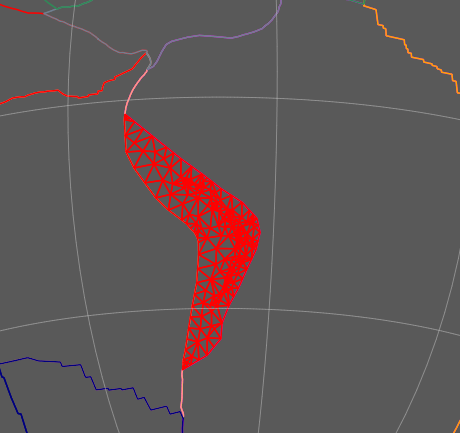
Resolved Topological Networks Options
A Resolved Topological Networks layer has the following configuration options:

The Input channels section has two types of input:
-
"Topological network features" is one (or more) feature collections containing topological network features.
-
"Reconstruction tree" is zero or one Reconstruction Tree layer.
The various Show… options under Network & Triangulation options are used to display different aspects of the triangulation generated in the deforming region. These are mostly debugging and visualisation aids.
Draw Style Setting displays a dialog to control the colouring of features - see Manage Colouring
6.6.6. Calculated Velocity Fields Layer
This layer calculates plate velocities at a set of static locations. Here static means non-rotating (the points do not move across the globe as the reconstruction time changes).
The velocities are calculated by determining which topological closed plate polygon contains each static point location. Then the finite rotation corresponding to that plate polygon’s reconstruction plate ID is used to calculate the velocity at the static point location.
This type of layer is automatically created when a feature collection containing features of type gpml:MeshNode is loaded. These features contain multi-point geometry that defines the set of static locations at which to calculate velocity.
An associated Reconstructed Geometries layer is also created to visualise the point locations. The Calculated Velocity Fields layer visualises the velocities as arrows (longer arrows represent larger velocities).
The velocity arrows are not drawn at every static point location. Instead they are spaced apart so that they are minimum distance from each other on the "screen" (on the computer monitor). This so they can be distinguished visually even for very dense meshes.
|
|
You can also explicitly create a new Calculated Velocity Fields layer and connect its input channels. This is useful for calculating velocities at the points in a multi-point, polyline or polygon features - for the purpose of velocity calculations each geometry is viewed simply as a collection of points (regardless of whether it’s a polyline or polygon or not). |
Calculated Velocity Fields Options
A Calculated Velocity Fields layer has the following configuration options:

The visibility icon of the Calculated Velocity Fields layer determines whether the velocity arrows are drawn in the globe and map views. And the visibility icon of the Reconstructed Geometries layer determines whether the set of static points (at which velocities are calculated) are drawn.

The Input channels section has three types of input:
-
"Mesh-point Features" is one (or more) feature collections containing features of type gpml:MeshNode (or other feature types if you explicitly created your own velocity layer) representing the set of static point locations at which to calculate velocity.
-
"Reconstruction tree" is zero or one Reconstruction Tree. The Reconstruction Tree layer is used to calculate velocities. Note that this should actually be the rotation tree used by the Resolved Topological Closed Plate Boundaries layer (the one connected on the "Source Features" input channel). This will be fixed in a future release.
-
"Reconstructed static/dynamic polygons/networks* is one (or more) layers of type Reconstructed Geometries (containing static polygons), Resolved Topological Closed Plate Boundaries (containing dynamic polygons) and/or Resolved Topological Networks (containing deforming dynamic polygons) that generates the "surfaces" that the velocities are calculated in.
|
|
When a Calculated Velocity Fields layer is automatically created (when the appropriate feature collection is loaded) GPlates will search for all Resolved Topological Closed Plate Boundaries and Resolved Topological Networks layers and connect their output to the input of the new Calculated Velocity Fields layer. |
|
|
When a Resolved Topological Closed Plate Boundaries (or Resolved Topological Networks) layer is automatically created (when the appropriate feature collection is loaded) GPlates will search for all Calculated Velocity Fields layers and connect their input to the output of the new Resolved Topological Closed Plate Boundaries (or Resolved Topological Networks) layer. |
7. Reconstructions
7.1. Introduction
The motions of tectonic plates through geological time may be described and simulated using plate-tectonic reconstructions. Plate-tectonic reconstructions are the calculations of the probable positions, orientations and motions of tectonic plates through time, based upon the relative (plate-to-plate) positions of plates at various times in the past which may be inferred from other data. Geological, geophysical and paleo-geographic data may be attached to the simulated plates, enabling a researcher to trace the motions and interactions of these data through time.
Geological time instants in GPlates are measured in units of Mega-annum (Ma), in which 1 Ma is equal to one million years in the past. For example, the allowable range for reconstructions is from 0 to 10 000 Ma (i.e. present day to 1010 years ago).
|
|
The current age of the Earth is approximately 4.5 x 109 years! |
7.2. Main Window Interface Components
7.2.1. Slider

Interface to interact with reconstruction animations in GPlates, discussed in further detail below.
Play
Starts animation, when pressed it changes to the pause button
 Pause
Pause
Halts animation, when pressed it changes to play button
Reset
Returns animation to the start time
 Fast Forward
Fast Forward
Step forwards one frame in the animation
 Rewind
Rewind
Step backwards one frame in the animation
7.2.2. Step Forwards One Frame / Step Backwards One Frame (Fast Forward and Rewind):
These buttons are used to change the current reconstruction time that you are viewing in small steps. Pressing the buttons once, or using their shortcut keys (Ctrl+I for forwards; Ctrl+Shift+I for backwards) will adjust the reconstruction time by one frame. The time interval between frames can be adjusted via the Configure Animation Dialog, accessed via the Reconstruction menu.
|
|
The Step Forwards one Frame / Step Backwards one Frame buttons can be held down to move through time rapidly. |
The forwards and backwards buttons apply relative to the current animation time. Normally, the present day (0 Ma) is at the right-hand side of the animation slider, and the distant past is on the left-hand side.
GPlates makes it possible for you to set a reverse animation, where the start time is the present day (or near past), and the end time is in the distant future. When an animation is set up this way, the slider and buttons behave as consistently as possible; your start time (the present) is on the left, and your end time (the distant past) is on the right. Using the Step Forwards one Frame button moves the slider to the right (into the past), and the Step Backwards one Frame button does the opposite, as you would expect.
|
|
The default settings for the Slider are: a time range of 140Ma to present and a time increment per frame of 1 million years |
7.3. Reconstruction Menu

The Reconstruction Menu provides access to the following tools:
Menu Item |
Shortcut |
Operation |
Reconstruct to Time… |
Ctrl+T |
Show a reconstruction for the user-specified time |
Step Backward One Frame |
Ctrl+Shift+I |
Step backward one frame in the animation |
Step Forward One Frame |
Ctrl+I |
Step forward one frame in the animation |
Reset Animation |
Return to the first frame of the animation |
|
Play Animation |
Start reconstructing each frame through the animation |
|
Configure Animation… |
Pop up the Configure Animation dialog to control the animation parameters |
|
Specify Anchored Plate ID… |
Ctrl+D |
Specify the anchored plate in the plate hierarchy |
View Total Reconstruction Poles |
Ctrl+P |
Pop up the Total Reconstruction Poles dialog |
Export… |
Opens the Export Dialog for exporing aspects of the reconstruction to files |
7.3.1. Reconstruct to Time
When this menu item is invoked, it will activate the Time field in the Main Window, which is used to specify the current reconstruction time. The user can type a new reconstruction time, or increase or decrease the value using the Up and Down arrow keys or the mouse scroll-wheel, before pressing the Enter key to execute the reconstruction.
The current frame of the animation always corresponds to the reconstruction time. Changing the reconstruction time will simultaneously change the current frame of the animation. If the specified time is outside the current range of the animation, the range will be extended.
7.3.2. Step Forward One Frame
This button is used to change the current reconstruction time forward that you are viewing in small steps.
7.3.3. Step Backward One Frame
This button is used to change the current reconstruction time backward that you are viewing in small steps.
7.3.4. Specify Anchored Plate ID
This item is used to choose the anchored plate ID of the plate hierarchy. It will be described in the chapter, More On Reconstructions.
7.3.5. View Total Reconstruction Poles
When this item is activated, the Total Reconstruction Poles dialog will appear, enabling the user to view a variety of information about the reconstruction poles and the plate hierarchy at the current reconstruction time. This dialog will be described in the chapter, More On Reconstructions.
 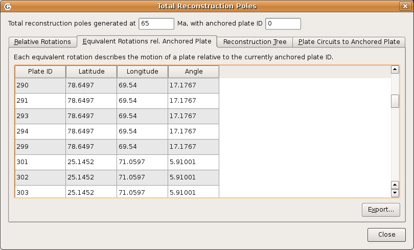
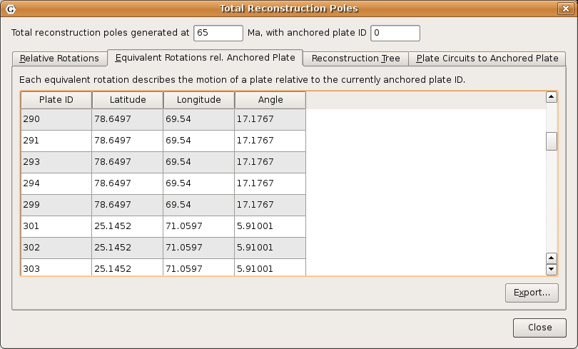


7.4. Animations
The animation dialog, found in the Reconstruction menu, allows you to automate a reconstruction backwards or forwards through time. The user can set the start and end times by either entering the age or using the current time displayed in the main window. The options, frames per second can be set and there is also the option to loop the animation.
7.4.1. Animation Dialog

Range
This group of controls specifies the time range that the animation should cover. The Use Main Window buttons are a convenient way of quickly entering the time that the main window is currently viewing.
Options
Additional options to fine-tune the behaviour of the animation are presented here. The Frames per second number controls the rate at which GPlates will limit the display of animation frames when presenting an animation interactively. Larger numbers produce a slower animation.
|
|
If calculating the next step of the animation takes too long, perhaps due to a large amount of data, GPlates may skip some frames to try and keep the animation running at the correct rate. |
Playback
These controls allow simple playback and seeking within the animation from this dialog. They behave identically to the equivalent controls found in the Reconstruction View.
8. Export
8.1. Introduction
The "Export" function allows users to save scientific data or images to files.
8.2. Export dialog
The Export dialog can be accessed via the Reconstruction menu, by choosing the Export… item. It is used to configure what aspects of the data you want export, what time range you want to export over, and the file names and formats you want to use.
The Export process can work in two different modes: Exporting a Time Sequence of snapshots, or just exporting a Single Snapshot of data.
The controls are divided into three groups. Range (or Time for a single snapshot), Options, and Export.
8.2.1. Export Time Sequence of Snapshots
Given a time range, export a series of files. Each file contains data at a particular time point. To activate the controls for exporting a time sequence, choose the Export Time Sequences of Snapshots option at the top of the dialog.

8.2.2. Export single Snapshot
Export data or image at a single specific time. To activate the controls for a one-off snapshot, click the Export Single Snapshot option at the top of the dialog.
8.2.3. Range
When using Export Time Sequence of Snapshots, the Range group of controls specifies the time range that the Export will cover. For convenience, these controls are linked to the Animation system, and affect the same time range that you see with the Time Slider and Configure Animation dialog - this way you can see a preview of what will be exported.
The Use Main Window buttons are a convenient way of quickly entering the time that the main window is currently viewing. The Reverse the Animation button can swap the start and end time.
8.2.4. Time
The Time group is used with Export Single Snapshot to specify a time point.
8.2.5. Options
The Option group specifies the items which users want to export and the directory to store output files.
A table shows what files will be created at each time, along with the substitution pattern that will be used to create each unique file name. Users can use Add… and *Remove" buttons to edit the table.
The Target directory specifies which directory all the files will be created in. Users can use the button on the right to select directory.
|
|
The Finish exactly on end time checkbox is important if you are creating an animation with a time increment that is not an exact multiple of the range of your animation. For example, creating an animation between 18 Ma and 0 Ma, in increments of 5 M. This range leaves a 3 million year gap at the end which does not fit neatly into the supplied 18-0 range. Checking the Finish exactly on end time option ensures that GPlates will still write this final, shorter, frame. |
8.2.6. Export
The Export group is used to start and stop the export, and provide progress information during the export process. Click Begin to commence the export and begin creating files. If you have specified a large range, this may take some time.
The Abort button is provided in the event that users wishes to terminate the export sequence early. In Export single Snapshot mode, users can not abort.
8.3. "Add Export" dialog
When choosing the "Add" button to add a new export item to the table, the Add Export dialog is shown to allow the selection of export type, format, and filename.
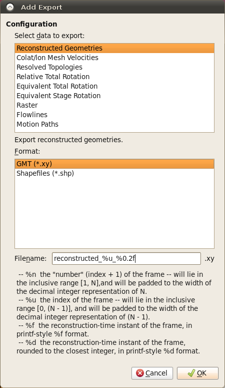
8.3.1. Select data to export
Users can select an entry in this list, and then the available output format will be listed in Format list.
8.3.2. Format
Select output file format in this list.
8.3.3. File name template
Specify the file name template which will be used to generate output file names.
8.4. Export Items
Below is a table of available export items.
| Item | Format | Description |
|---|---|---|
Reconstructed Geometries |
GMT, Shapefile |
Export the reconstructed geometries in their paleo-coordinates. |
Projected Geometries |
SVG |
Export projected geometries data according to the current View settings. |
Colat/lon Mesh Velocities |
gpml |
Export Plate velocity data. You will need to have plate topologies and a mesh cap configured. |
Resolved Topologies |
GMT |
Export resolved topologies as static polygons in paleo-coordinates. |
Relative Total Rotation |
CSV |
Export relative total rotation data. |
Equivalent Total Rotation |
CSV |
Export equivalent total rotation data. |
Equivalent Stage Rotation |
CSV |
Export equivalent stage(1My) rotation data. |
Raster |
bmp,jpg,jpeg,png,ppm,tiff,xbm,xpm |
Export an image according to the current View settings. |
Flowlines |
GMT, Shapefiles |
Export flowlines. |
Motion Paths |
GMT, Shapefiles |
Export motion tracks. |
8.5. File name template
The Filename field is used as a template value that GPlates will use to name your exported files, and ensure that each Export snapshot gets assigned a unique name. Special Placeholder tokens can be used in this text entry box that GPlates will substitute for different values according to what is being exported and at what time.
| Placeholder | Description |
|---|---|
%n |
the "number" (index + 1) of the frame — will lie in the inclusive range [1, N], and will be padded to the width of the decimal integer representation of N. |
%u |
the index of the frame — will lie in the inclusive range [0, (N - 1)], and will be padded to the width of the decimal integer representation of (N - 1). |
%f |
the reconstruction-time instant of the frame, in printf-style %f format. |
%d |
the reconstruction-time instant of the frame, rounded to the closest integer, in printf-style %d format. |
%P |
placeholder string will get replaced for each type of export. |
9. Interacting With Features
This chapter provides a guide to interacting with the geological features which you are creating or editing in GPlates.
9.1. Tools for Interacting with Features
To interact with features, the following tools can be used:
Icon |
Tool |
Shortcut |
Operation |
|
Choose Feature |
F |
Click a geometry to choose a feature. Shift+click to query immediately. Ctrl+drag to re-orient globe |
|
Move Vertex |
V |
Drag to move a vertex of the current feature. You can still drag the globe around |
|
Insert Vertex |
I |
Insert a new vertex into the feature geometry |
|
Delete Vertex |
X |
Remove a vertex from a multi-point, polyline or polygon geometry |
|
Split Feature |
T |
Click to split the geometry of the selected feature at a point to create two features |
|
|
To review information on all Tools please consult the Introducing the Main Window chapter. |
9.2.
 Choose Feature Tool
Choose Feature Tool
9.2.1. Clicked Geometry Table
You can query a feature, by first selecting
 then click the mouse cursor on what you want to query. The information will be displayed in the Clicked Geometry Table.
then click the mouse cursor on what you want to query. The information will be displayed in the Clicked Geometry Table.

|
|
The table will list all features that have geometry in proximity to the point that was clicked. This is useful in situations where multiple geometries, from different features, happen to lie on top of each other. In this case the mouse click will populate the Clicked Geometry Table with one entry for each geometry. You can then use to the Clicked Geometry Table to select the desired geometry. As you select each entry in the Clicked Geometry Table its geometry (as displayed on the globe) will highlight to show you which geometry you are selecting. |
|
|
Most features have a single geometry but some do have multiple geometries. For these features all geometries are highlighted, however the geometry that was actually clicked on is displayed in white whereas the other geometries (belonging to that feature) are displayed in grey. |
9.2.2. Current Feature Panel

The Current Feature Panel summarises the pertinent properties of the current feature. This is the starting point for further interaction with the feature. It contains:
-
Type of feature
-
Name of the feature
-
Plate ID of the feature (used for reconstruction)
-
Conjugate plate ID of the feature, if it has one
-
Plate IDs for the left and right sides of the feature, if applicable
-
Life-time of the feature (the period for when it exists)
-
The purpose of the clicked geometry
-
Buttons to:
-
 Query Feature
Query Feature
-
 Edit Feature
Edit Feature
-
 Copy Geometry to Digitise Tool
Copy Geometry to Digitise Tool
-
 Clone Feature
Clone Feature
-
 Delete Feature
Delete Feature
-
The Edit menu also provides access to:
-
Undo [Ctrl+Z]
-
Redo [Ctrl+Y]
-
Query Feature [Ctrl+R]
-
Edit Feature [Ctrl+E]
-
Copy Geometry to Digitise Tool
-
Clone Feature
-
Delete Feature [Delete]
-
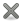 Clear Selection [Ctrl+K]
|
|
The valid life-time of the feature is a range of geological time, i.e from 65Ma to 0Ma (present day). |
9.2.3. Querying Feature Properties
To query the properties of the current feature, either click ,
, at the bottom of the Current Feature Panel, or press Ctrl+R to invoke the corresponding operation in the Edit Menu. The Feature Properties dialog will appear, containing a complete listing of the properties of the current feature.

|
|
You can keep this dialog open and continue to use the Choose Feature Tool to click on new features - the Feature Properties dialog will be automatically updated. |
Feature Type
This is the type of feature (e.g. fault, mid ocean ridge, subduction zone).
Query Properties Tab
This tab contains a complete listing of the properties of the current feature, presented in a concise, structured form which is easy to read, but does not allow editing of values.
Edit Properties Tab
This tab contains a table of properties, which enable editing of values. For more information on this tab, consult Editing Feature Properties below.
View Coordinates Tab
This tab contains a listing of the coordinates of the feature geometries, in both present-day and reconstructed-time position. For more information on this tab consult Viewing Coordinates below.
Feature ID
This is a unique label for this particular feature. It is a sequence of letters and numbers which is meaningful to GPlates. It is not yet of interest to users.
Revision ID
This is a unique label for this particular version of this feature. It is a sequence of letters and numbers which is meaningful to GPlates. It is not yet of interest to users.
9.2.4. Editing Feature Properties
This sequence of screenshots, first shows the initial window that will appear, and the following images display the options provided after selecting a property to edit. Each type of property has its own editing options.

The table in the centre lists all the properties belonging to the currently-chosen feature. The left hand column lists property names, and the right hand column lists property values.
The name of a property is a way to associate meaning with the feature data - for instance, this feature has a plate ID associated with it. That plate ID is 308. It is stored in the gpml:reconstructionPlateId property, indicating that GPlates should use that plate ID to reconstruct the feature.
Clicking a row of the table will expand the bottom half of the dialog with new controls specific to the property that was clicked.
9.2.5. Editing Geometry
|
|
For further information on editing feature geometries please read the Editing Geometries chapter. |
The controls for directly editing the coordinates used by geometry appears as a table with Lat, Lon, and Actions columns. Click a row of the table to select it, and the following action buttons will appear:
 Insert a new row above
Insert a new row above
 Insert a new row below
Insert a new row below
 Delete row
Delete row
-
Double-clicking an entry in the table lets you edit a coordinate directly.
-
The Valid Geometry line will indicate if the coordinates in the table can be turned into correct geometry. It will indicate an error if there is something invalid about the coordinates, such as a lat/lon of 500 or similar.
-
-
The "Append Points" spin-boxes are designed to be a convenient means of data entry, if you need to enter some points from a hard copy source.
-
Click in the Lon to start entering new coordinates. Type in a lon value, press TAB, type in a lat value, press TAB (to move to the "+" button), press SPACE to activate that button. The new coordinate line will be added to the table, and GPlates will prepare to receive the next line of input.
-
-
Selecting a property from the table and selecting Delete will delete the property from the feature.

9.2.6. Adding a Feature Property
By clicking on Add Property in the Feature Properties window, a new dialog will appear where you can select the Name, Type and Value of a property. In most cases, you will only need to select the name of the property you wish to add; the type of that property will be filled in automatically for you.

In the image above, the user has clicked on the down arrow of the combo box, and is selecting the "gpml:leftPlate" property. This property is used to annotate which regions are on either side of features such as a mid ocean ridge.
With the property name chosen, the lower section of the dialog presents the appropriate controls for entering the new value - in this case, a plate ID. Press Enter or the OK button to confirm the addition of the new property.
|
|
If the property you are adding is not appropriate for the type of feature then a warning message is displayed at the bottom of the Add Property dialog. |
9.2.7. Viewing Coordinates
The View Coordinates dialog provides a tree view summarising the coordinates of every geometry in the feature.
The Property Name column lists the names and types of geometry, plus an enumeration of each coordinate. The Present Day column lists the coordinates of the geometry as it appears in the present, i.e. 0 Ma. The Reconstructed column lists the coordinates of the geometry as they appear on screen at the current view time, which for convenience is displayed at the bottom of the dialog.
9.2.8.
Copy Geometry to Digitise Tool
Makes a copy of the geometry of the currently chosen feature (if any has been selected) and transfers the copied geometry to the appropriate digitisation tool:
-
 Polyline Geometry tool for polyline geometry,
Polyline Geometry tool for polyline geometry,
-
 Point Geometries tool for point or multi-point geometry,
Point Geometries tool for point or multi-point geometry,
-
Polygon Geometry tool for polygon geometry.
You can then create a new feature from within the digitisation tool or, if you are not ready to create a new feature yet, you can further digitise the geometry to add lines (or points) or switch to a different geometry editing tool such as the Move Vertex Tool to make adjustments.
|
|
This ability is useful when you want to create a new feature that has the same geometry as another feature but you want the feature type to be different or you want a new feature that has different properties (but same geometry). |
|
|
Copy Geometry to Digitise Tool does not work on topological features such as Topological Closed Plate Polygon features. The geometry of these features changes dynamically as the reconstruction time changes. |
9.2.9.
Clone Feature
Makes a copy of the entire feature (the currently chosen feature - if any has been selected). This differs from the Copy Geometry to Digitise Tool in that not only is the geometry of the feature copied but also all other properties of the feature are copied.
After this operation you will have two features which are identical except for their feature ID (the uniqueness identifier). The focused feature will now be the new cloned feature. Since both features have the same geometry(s) they will be indistinguishable except for the fact that they have different feature IDs, however the mouse click point will now reveal two features in the Clicked Geometry Table - the original feature and the cloned feature.
|
|
Unlike Copy Geometry to Digitise Tool, Clone Feature does work on topological features such as Topological Closed Plate Polygon features. In this case the time-dependent list of topological sections referenced by a Topological Closed Plate Polygon feature is just another property of that feature that gets copied like any other property. |
9.2.10.
Delete Feature
Deletes the currently chosen feature and removes it from the feature collection that contained it.
|
|
The feature collection is marked as modified but is not automatically saved to file (see the Loading And Saving chapter). |
9.3. Features Menu
- The Features Menu contains a number of tools that are used to interact with features less directly. It has the following structure
-
==== Assign Plate IDs Assigns reconstruction plate IDs (and optionally time of appearance/disappearance) to a set of features. This is typically done to features that do not yet have plate IDs (or valid time ranges) but it can also override an existing plate ID, of a feature, with a new plate ID. To start the process, use the Assign Plate IDs item on the Features menu.
Two sets of features are required for this process:
-
A set of partitioning features.
These are the features that the plate IDs (and optionally time ranges) are copied from. These features must have (or generate) polygon geometry and hence can be either static polygon features (where the polygon geometry does not change shape) or Topological Closed Plate Polygons features (where the polygon shape changes dynamically as the reconstruction time changes). These features remain unmodified by this process.
-
A set of features to be partitioned.
These are the features that the plate IDs (and optionally time ranges) are copied to. And also, depending on the partitioning option chosen, the geometry(s) in these features can be partitioned (cookie cut) into several smaller geometries (still belonging to the one feature). Hence these features are modified by the addition, or modification, of plate ID (and optionally time range) properties and also their geometry property(s) depending on the partitioning options selected.
Here is an example of selecting partitioning features that are static polygons.

Here is an example of selecting coastline features to be partitioned (by the static polygons in the previous dialog page).

Here the user can specify some options.

Specifying the reconstruction time
Select the reconstruction time representing the geometry in the feature collections. The three options for reconstruction time are:
-
Present day: the reconstruction time is 0Ma.
-
Current reconstruction time: the reconstruction time in the main window.
-
Specify reconstruction time: choose an arbitrary reconstruction time.
Note: Present day should be selected when assigning plate ids to VirtualGeomagneticPole features.
|
|
The partitioning polygon features are reconstructed to the specified reconstruction time before testing for overlap/intersection with the features to be partitioned. The geometry in features to be partitioned effectively represents a snapshot of the geometry of those features at the specified reconstruction time. In other words the features to be partitioned effectively contain geometry at the reconstruction time regardless of whether they have a reconstruction plate id property or not. However, most features in GPlates contain present-day geometry so this distinction is not that important (typically "Present day" will be selected). |
Specifying how to partition features
These three options determine how features are partitioned:
-
Copy feature properties from the polygon that most overlaps a feature:
Assign, to each feature to be partitioned, the plate ID of the partitioning polygon feature that its geometry(s) overlaps the most.
-
Copy feature properties from the polygon that most overlaps each geometry in a feature:
Assign, to each geometry of a feature to be partitioned, the plate ID of the partitioning polygon feature that its geometry overlaps the most. Note that a plate ID cannot be assigned to a geometry of a feature so instead extra features are created as necessary. For example if a feature to be partitioned has two geometries where one geometry overlaps plate A and the other geometry overlaps plate B then the feature to be partitioned will get split into two features - one feature containing the first geometry (and plate ID A) and the other containing the second geometry (and plate ID B). Note that although the feature is split into two features the geometries are not partitioned (cookie cut) and hence the geometry data remains unmodified.
-
Partition (cookie cut) feature geometry into polygons and copy feature properties:
Partition all geometries of a feature to be partitioned into the partitioning polygons intersecting them. This can create extra features, for example if a feature to be partitioned has only one geometry but it overlaps both plate A and plate B then it is partitioned into one or more geometries fully contained by plate A (and likewise for plate B). These partitioned geometries will now be contained by two features since they have different plate IDs. If the polygons do not cover the entire surface of the globe then it is possible for some features to be partitioned (or partitioned geometries) to fall outside all partitioning polygons. In this situation the feature to be partitioned is not modified and will retain its original feature properties (such as reconstruction plate ID). VirtualGeomagneticPole features are treated differently - these features are assigned to the polygon whose boundary contains the VirtualGeomagneticPole's sample site point location. For these features the above options are ignored.
Specifying which feature properties to copy
This options allows the user to specify which feature properties are copied from the partitioning polygon feature to the feature to be partitioned.
Currently two feature property options are supported (in the future this will be extended to support any feature property):
-
Reconstruction plate ID: the reconstruction plate ID property,
-
Time of appearance and disappearance: the time interval over which a feature exists.
|
|
These options are not mutually exclusive. Both can be selected. |
Depending on the number of features to be partitioned it can take a while to assign plate IDs and optionally partition the geometries.

The features to be partitioned have now been modified.
|
|
Currently if a feature to be partitioned contains polygon geometry and the "Partition (cookie cut) feature geometry…" option is selected then the resulting partitioned geometry will be polylines instead of polygons. This will be rectified in a future release. |
9.3.1. Generate Mesh Caps
The Generate Mesh Caps dialog can be accessed via Features→Generate Mesh Caps….
The mesh caps are used to calculate velocities. The sphere will be covered by 12 diamonds — Mesh Caps. Each diamond will be further divided into smaller pieces according to *Resolution" setting. Eventually, the sphere will be divided into evenly distributed diamonds with equal area.
Resolution
Users can specify the resolution of mesh caps. The nodex and nodey parameters indicate how the 12 original big diamonds can be divided evenly.
For the global mesh, the nodex always equals nodey. Currently, GPlates can only generate global mesh.
Output
You can specify the file name template, which will be used to generate output file names. The Output directory indicates the directory where the output file will be stored.
In total, 12 files will be generated in the specified output directory. The file names are created from template, for example %d.mesh.%c where the %d represents the mesh resolution and %c represents the cap index number.
|
|
The %d and %c must appear in the template once and only once. |
10. More on Reconstructions
10.1. Theory
10.1.1. Plate IDs
As discussed earlier in this documentation, GPlates uses the concept of a Plate ID to ascribe tectonic motion to a feature. All features using the same plate ID move in unison when reconstructed back through time. A plate ID is a non-negative whole number. Assigning specific meanings to specific plate IDs, such as making plate ID 714 correspond to northwest Africa, is up to the creator of the rotation file.
Plate IDs do not correspond to a physical tectonic plate, although they may represent the motion of features which are on that physical plate. Plate IDs can also be assigned to represent the motion of things on the same physical plate relative to one another - for example, the motion of an island arc caused by back-arc spreading. A subduction zone can be assigned one plate ID, and its associated island arc can be assigned another plate ID. The motion of both of these plate IDs can be anchored to a third plate ID, representing the global motion of the physical plate underneath the subduction zone and island arc.
10.1.2. Finite Rotations
Euler’s Displacement Theorem tells us that any displacement on the surface of the globe can be modelled as a rotation about some axis. This combination of axis and angle is called a finite rotation. Finite rotations are used by GPlates as the elementary building blocks of plate motion.
10.1.3. Total Reconstruction Poles
Total Reconstruction Poles tie finite rotations to plate motion. A total reconstruction pole is a finite rotation which "reconstructs" a plate from its present day position to its position at some point in time in the past. It is expressed as the combination of a "fixed" plate id, a "moving" plate id, a point in time and a finite rotation.
Reconstructions are defined in a relative fashion; A single total reconstruction pole defines the motion of one plate id (the "moving" plate id) relative to another (the "fixed" plate id) at a specific moment in geological time. A sequence of total reconstruction poles is needed in order to fully model the motion of one particular plate across the surface of the globe throughout time.
10.1.4. Anchored Plate ID
A sequence of total reconstruction poles is used to model the motion of a single plate across the surface of the globe. The total reconstruction poles describe the relative motion between each plate, but ultimately this motion has to be traced back to a single plate ID which is considered "anchored". GPlates calls this the Anchored Plate ID. Generally, this plate ID corresponds to an absolute reference frame, such as a hotspot, paleomagnetic, or mantle reference frame. The convention is to assign the anchored plate ID to 000, but GPlates allows any plate ID to be used as the anchored plate ID.
10.1.5. The Rotation Hierarchy
To create the model of global plate rotations that is used in GPlates, total reconstruction poles are arranged to form a hierarchy, or tree-like structure. At the top of the hierarchy is the anchored plate ID. Successive plate IDs are further down the chain, linked by total reconstruction poles. To calculate the absolute rotation of a plate ID of a plate with a given plate ID. (relative to the fixed reference defined by the anchored plate ID, at a given time), GPlates starts at that point in the hierarchy and works its way up to the top - to the root of the tree.
10.2. Specify Anchored Plate ID
The Specify Anchored Plate ID command on the Reconstruction menu can be used to change which plate ID GPlates considers to be the globally fixed reference when performing reconstructions. Enter a new plate ID to be the anchor in the dialog that pops up, and GPlates will automatically rearrange the rotation hierarchy so that the specified plate ID is at the top.
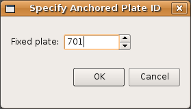
10.3. Reconstruction Pole Dialog
The Total Reconstruction Pole Dialog is accessed from the Reconstruction menu. It contains four tables of information, relevant to the current reconstruction time and the current anchored plate ID.
10.3.1. Relative Rotations
This table lists all the total reconstruction poles in terms of the relative motions between plates, for the current reconstruction time.
10.3.2. Equivalent Rotations Relative To Anchored Plate
Similar to the Relative Rotations table, this lists rotations for each plate. However, the data presented here has been converted from individual relative rotations into the equivalent absolute rotation, relative to the anchored plate ID. Again, these apply to the current reconstruction time.
10.3.3. Reconstruction Tree
Here the reconstruction hierarchy is presented in a more natural, tree-like form. Relative rotations are listed, but individual nodes of the tree (plate IDs) can be expanded or collapsed, to explore the branches of the plate rotation model.
10.3.4. Plate Circuits To Stationary Plate
This tab of the Total Reconstruction Poles dialog can be used to trace a series of total reconstruction poles from any given plate ID back to the top of the hierarchy, the anchored plate ID. It is useful to quickly identify the other plate IDs that a chosen plate ID depends on.
11. Editing Geometries
11.1. Geometries in GPlates
The geometries which GPlates handles are point, multi-point, polyline and polygon. Certain types of features contain different geometries, for example: a volcano uses a point to represent its position; a multi-point is used to represent a field of points which all have the same properties; an Isochron uses a polyline to represent its centre-line; and a basin uses a polygon to represent its outline.
11.1.1. Point
A point is the most basic form of geometry in GPlates and the basis of all other geometries.
11.1.2. Multi-point
A collection of points that move as one.
11.1.3. Polyline
A series of lines drawn end-to-end, forming an open polygon. It is assumed that the lines are non-intersecting. Sometimes in GPlates the direction of a polyline is important, when determining the properties on either side of the line; for example, one side of a subduction zone represents the subducting slab, while the other represents the overriding plate. The direction of a polyline is determined from the "start" of the polyline (the first point digitised) to the "end" of the polyline.
11.1.4. Polygon
A series of lines drawn end-to-end, forming a closed shape. It is assumed that the lines are non-intersecting.
11.2. Geometry-Editing Tools
The geometry-editing tools are Canvas Tools and can be found in the Tool Palette. To begin editing geometries it is first necessary to either:
-
Select a feature using the Choose Feature Tool,
, or
-
Have started digitising some geometry using one of the three digitisation tools (Polyline, Multipoint, Polygon).
|
|
The Split Feature Tool
works only on a feature selected with the Choose Feature Tool
|
Each geometry-editing tool is only enabled if there’s enough geometry for it to make sense to use that tool. For example, if you are digitising a polygon and have digitised three points so far then the Delete Vertex tool will be disabled because it doesn’t make sense to have a two-vertex polygon (polygons require three or more vertices).
11.2.1.
 Move Vertex Tool
Move Vertex Tool
Once you have selected a feature, its properties will appear in the Current Feature Panel. Little dots will appear on the chosen feature geometry, representing the vertices and can be positioned to a new location. The changes made to the geometry are immediate and there is no need to press an "Apply" button.
|
|
This tool is useful for correcting mistakes in the features' geometry. |
11.2.2.
 Insert Vertex Tool
Insert Vertex Tool
If the current geometry is a polyline or polygon, when the user clicks on a line, a new vertex is inserted at that position on the line. The line will highlight yellow when the mouse is close enough to the line to insert a vertex. This vertex may then be dragged to a new position, using the move vertex tool.
|
|
When clicking on a line segment the vertex will always be inserted directly on the line segment even though it’s possible to highlight a line segment and click on it when the mouse is not directly over the line. |
|
|
If the mouse is too close to an existing vertex then you will not be able to insert a new vertex - you can tell this is the case when the line segment no longer highlights yellow. If you need to insert a new vertex very close to another vertex you will need to zoom in. |
The Insert Vertex tool can also be used to extend a polyline at either end. If you move the mouse such that it is closer to one of the endpoints than any other point in the polyline then you can see visually that a subsequent mousse click will extend the polyline by one line segment. The same applies to a polygon except the two endpoints are now the first and last vertex of the polygon and the line segment between the last and first vertex will be replaced with two line segments that link the first and last vertex with the inserted vertex.
If the current geometry is a multi-point, a new point will be created at the click-position.
11.2.3. Delete Vertex Tool
If the current geometry is a polyline or polygon, when the user clicks on an existing vertex, that vertex will be deleted. The vertices on either side of the removed vertex will now be connected directly, creating a new polyline or polygon. In the case of multi-point geometry, when the user clicks on an existing point, the point will be removed.
|
|
Note that if a vertex is removed from a polygon, the resulting geometry will still be a closed polygon, as long as there are sufficient remaining vertices. GPlates requires at least three distinct points to define a polygon. If there are only two distinct points remaining, the geometry will become a polyline. |
|
|
Note that if a vertex is removed from a polyline, the resulting geometry will still be a single continuous polyline, as long as there are sufficient remaining vertices. GPlates requires at least two distinct points to define a polyline. If there is only one distinct point remaining, the geometry will become a point. |
|
|
Note that if a vertex (i.e. point) is removed from a multi-point geometry which contains only two points, it will become a point geometry. |
|
|
It is invalid to remove a vertex from a single point geometry. In order to remove the geometry entirely the feature will have to be deleted. |
11.2.4. Split Feature Tool
When the user clicks on a line the clicked geometry will be split at that point into two geometries. The line will highlight yellow when the mouse is close enough to the line to perform a split. After the split the original feature will contain one geometry and a new feature will be created to contain the other geometry. Both features will have the same properties and will only differ in their geometries (and their feature ID which is their uniqueness identifier).
|
|
This tool works only on a feature selected with the Choose Feature Tool
|
11.3. In the Feature Properties Dialog
The controls for directly editing the coordinates used by geometry appears as a table with Lat, Lon, and Actions columns. Click a row of the table to select it, and the following action buttons will appear:
Insert a new row above
Insert a new row below
 Delete row
Delete row
-
Double-clicking an entry in the table lets you edit a coordinate directly.
-
The Valid Geometry line will indicate if the coordinates in the table can be turned into correct geometry. It will indicate an error if there is something invalid about the coordinates, such as a lat/lon of 500 or similar.
-
-
The "Append Points" spin-boxes are designed to be a convenient means of data entry, if you need to enter some points from a hard copy source.
-
Click in the Lon to start entering new coordinates. Type in a lon value, press TAB, type in a lat value, press TAB (to move to the "+" button), press SPACE to activate that button. The new coordinate line will be added to the table, and GPlates will prepare to receive the next line of input.
-
-
Selecting a property from the table and selecting Delete will delete the property from the feature.
12. Creating New Features
This chapter aims to provide the reader with information and instructions for digitising new features in GPlates.
12.1. Digitisation
GPlates allows the user to create features on the globe: from aseismic ridges to volcanoes. To create a new feature, a user first "digitises" a new geometry, then specifies the additional properties for that feature. The geometries which GPlates handles are point, polyline (a series of lines drawn end-to-end, forming an open polygon) and polygon. Certain types of features require certain geometries, for example: a volcano uses a point to represent its position; an isochron uses a polyline to represent its center-line; and a basin uses a polygon to represent its outline.
12.1.1. Digitisation Tools
GPlates offers three digitisation tools in the Tool Palette:
 Polyline Geometry
Polyline Geometry
 Point Geometries
Point Geometries
Polygon Geometry
Each tool can be used to create any of the GPlates GPML features, however it is the user’s responsibility to ensure that the correct geometry is digitised for the intended feature type.
After choosing a geometry tool, you can begin adding control points to the globe by clicking on an area; these points define the geometry (feature) you want to create. (You can still rotate the globe by holding down the Ctrl key.) After you have plotted the feature, the latitude and longitude can be verified in the digitisation panel.
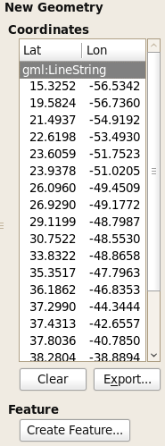
Once you are satisfied with the new feature location, click Create Feature button to select the type of feature you would like to create. E.g Isochron, Fault, Mid Ocean Ridge etc.
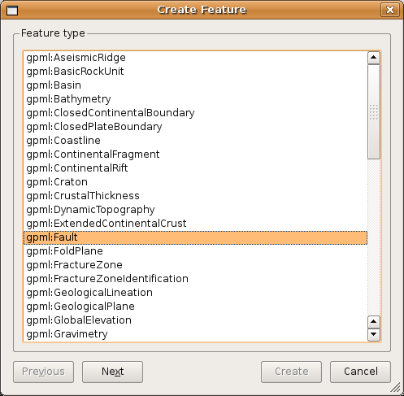
The next step is to assign a geometry to the feature as well as:
-
Plate ID
-
A begin time for the feature
-
An end time
-
A name (To help you distinguish/classify your feature)
In the final step of feature creation, the feature is assigned to a feature collection. All data files that are currently loaded in GPlates will be listed here, as well as the < New Feature Collection > option. Choosing any one of the existing feature collections and clicking Create will add the newly digitised feature to that collection and return the user to the GPlates main window.
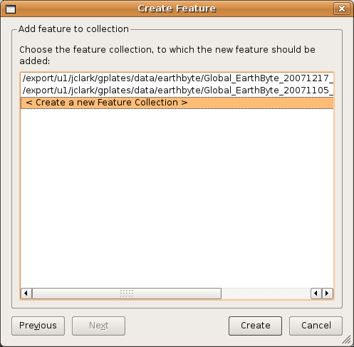
If the < New Feature Collection > option is selected, a new feature collection will be created to hold the new feature. This feature collection will not yet have a name, and is not associated with a file on disk. Like all other feature collections, the new one will be found in the Manage Feature Collections dialog.
13. Flowlines
13.1. Introduction
Flowlines represent the movement of material away from a spreading centre, and are calculated based on half stage-poles between two plates at specified time-intervals. GPlates can generate and export flowlines.
13.2. Creating flowlines
To use flowlines in GPlates, you need to create or load a flowline feature. Flowline features can be created, like other features, with the digitisation tool. See Creating New Features for more information on using the digitisation tool. To create a flowline, begin by selecting the Point Geometries icon from the Tool Palette:
 Point Geometries
Point Geometries
After choosing the Point Geometries tool, select points on the globe which represent the flowline spreading centre, or either of the flowline end points. Later in the creation process you can instruct GPlates which sort of point you have chosen. Once you are satisfied with the locations, click the Create Feature button and select gpml:Flowline as the desired feature type.
|
|
Flowlines can be created at any reconstruction time. |

The next step is to allocate left and right plate ids - representing the plates on either side of the flowline - and times of appearance and disappearance.
|
|
Flowlines will only be generated between the feature’s time of appearance and time of disappearance. |

Next select how GPlates should interpret your chosen point geometries - as spreading centres, as left end points, or as right end points of flowlines - and provide the times between which the half-stage poles are calculated.

Finally assign your new flowline feature to a feature collection.
After creating your flowline feature you should see the reconstructed flowline(s) on the globe or map. Flowlines will automatically reconstruct appropriately for the current reconstruction time.

13.3. Saving flowlines
Flowline feature collections can be saved in gpml format and loaded like other feature collections.
13.4. Editing flowlines
Flowline features can be edited like other features by selecting Choose Feature from the Tool Palette and clicking on the central seed point of the flowline.
13.5. Exporting flowlines
Reconstructed flowline geometries can be exported to GMT and ESRI Shapefile format. To export flowlines, select Export… from the Reconstruction menu. After selecting Add, you can select Flowlines as the export data type.

When exporting to GMT format, each reconstructed flowline point is output in the form (lon, lat, time).
>reconstructionTime 0 >test-flow-points.gpml >Flowline <identity>GPlates-a5e5b41c-089a-4d3f-a877-b5cc0088f43f</identity> <revision>GPlates-550e75b5-5d27-4146-b83d-93ccfa3be165</revision> > Left plate: 802 > Right plate: 801 > Times: 0,5,10,15,20,25,30,35,40,45,50 > Seed point: Lat: -50.3407, Lon: 139.229 > Left-plate flowline 139.229000 -50.340700 0.000000 139.197261 -51.887165 5.000000 139.325022 -53.317310 10.000000 139.565701 -54.653181 15.000000 139.856508 -55.970876 20.000000 140.163463 -57.330579 25.000000 140.449153 -58.889273 30.000000 140.746852 -60.278992 35.000000 141.049859 -61.184592 40.000000 141.374462 -61.686198 45.000000 141.655807 -62.007476 50.000000
14. Motion Paths
14.1. Introduction
Motion Paths illustrate the movement of plates over time, either with respect to the anchor plate, or with respect to some other specified plate.
14.2. Creating Motion Paths
To use motion paths in GPlates, you need to create or load a motion path feature. Motion path features can be created, like other features, with the digitisation tool. See Creating New Features for more information on using the digitisation tool. To create a motion path, begin by selecting the Point Geometries icon from the Tool Palette:
 Point Geometries
Point Geometries
After choosing the Point Geometries tool, select points on the globe which you wish to track. Once you are satisfied with the locations, click the Create Feature button and select gpml:MotionPath as the desired feature type.
|
|
Motion Paths can be created at any reconstruction time. |
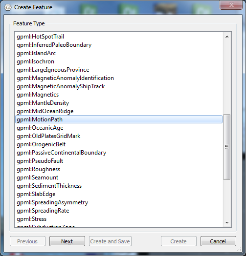
Next allocate a plate id and the times of appearance and disappearance.
|
|
Motion paths will only be generated between the feature’s time of appearance and time of disappearance. |

Next select the reference plate id. The motion path is calculated with respect to this reference plate id.
|
|
To display the absolute motion (with respect to the mantle), set the reference plate id to zero. |
Then specify the times between which the path segments are calculated.

Finally assign your new motion path feature to a feature collection.
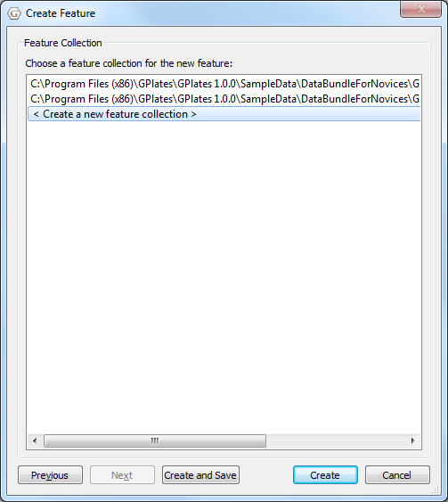
After creating your motion path feature you should see the reconstructed motion path(s) on the globe or map. Motion paths will automatically update appropriately for the current reconstruction time.

14.3. Saving motion paths
Motion path feature collections can be saved in gpml format and loaded like other feature collections.
14.4. Editing motion paths
Motion path features can be edited like other features by selecting Choose Feature from the Tool Palette and clicking on the end point of the motion path.
14.5. Exporting motion paths
Reconstructed motion path geometries can be exported to GMT and ESRI Shapefile format. To export motion paths, select Export… from the Reconstruction menu. After selecting Add, you can select Motion Paths as the export data type.

When exporting to GMT format, each reconstructed motion path point is output in the form (lon, lat, time).
>anchorPlateId 0 >reconstructionTime 0 > >MotionPath <identity>GPlates-a3c24577-4137-4226-aba4-bde5427cba32</identity> <revision>GPlates-f11fa5f9-bf1d-4000-b6af-eaa465ceea0d</revision> > Recostruction plate id: 102 > Relative plate id: 301 > 0,10,20,30,40,50,60,70,80,90,100 > Seed point: Lat: 62.9712, Lon: -40.1395 > Motion path -16.213502 58.361165 100.000000 -16.625527 58.450034 90.000000 -16.934371 58.691767 80.000000 -17.076489 58.742035 70.000000 -17.763448 59.146028 60.000000 -21.656092 60.522007 50.000000 -25.174028 61.902590 40.000000 -28.717604 62.347711 30.000000 -31.941397 62.609357 20.000000 -36.158642 62.825853 10.000000 -40.139488 62.971198 0.000000
15. Small Circles
15.1. Introduction
Small circle feautures can be created and displayed on the globe and map. The small circles can be drawn with the mouse directly on the globe or map, or explicitly specified by the user. The centres of small circles can also can be generated from a stage-pole calculation. Small circle features can be exported and imported like regular GPML features.
15.2. Creating small circles with the mouse.
To create small circles, select the Create Small Circles canvas tool. This will open the Small Circle Task Panel. To draw a small circle using the mouse, left-click once to define the centre of the circle, and left-click a second time to define a point on the circumference. To draw multiple small circles sharing the same centre, click once to define the centre, and shift-left-click to define a point on each circumference. Left-click to define a point on the last circumference.

15.3. Creating small circles by specifying the centre and radius.
To provide the centre and angular radii of small circles, select the Specify Centre, Radii button. This will open the Create Small Circle dialog. Next choose how the centre will be determined. If you know the lat-lon of the centre already, enter them in the Lat and Lon boxes. If you want the centre to be calculated from a stage-pole calculation, select the Use stage pole checkbox, and provide two plate ids and two times for the stage pole. Clicking Generate will fill the Lat and Lon boxes with the stage pole centre.
Next choose the radius or radii of the small circle(s), and select Preview. You should then see small cirles on the globe, and their centre and radii in the Small Circle Task Panel.
15.4. Creating small cirle features
To create small circle features from the circles previewed on the globe or map, press the Create feature(s) button. This will take you through a Create Small Circle wizard, similar to that in the Creating New Features chapter.
16. Total Reconstruction Pole Manipulation
This chapter describes how to manipulate the reconstruction pole hierarchy using the Modify Reconstruction Poles tool.
16.1. Modify Reconstruction Poles Tool
Found on the Tool Palette, the Modify Reconstruction Poles Tool is used to interactively modify the reconstruction poles for a given plate ID.
Icon |
Tool |
Shortcut |
Operation |
|
Modify Reconstruction Pole |
P |
Drag or Shift+drag the current geometry to modify its reconstruction pole. Ctrl+drag to re-orient the globe by holding down Ctrl |
16.1.1. Choosing a Plate ID to move
To select a Plate ID to move, the Plate needs to be in the field of view, and the reconstruction time needs to be at the correct geological time.
The second step is to select a feature which belongs to the plate ID that should be changed. Select the Choose Feature tool,
 , then click the mouse cursor on the feature. You can confirm that you have selected the correct plate ID by checking the Current Feature Panel.
, then click the mouse cursor on the feature. You can confirm that you have selected the correct plate ID by checking the Current Feature Panel.
Now select the Modify Reconstruction Poles tool, . Notice that all features belonging to the chosen plate ID are now highlighted.
16.1.2. Adjusting a Reconstruction Pole
After the feature plate has been selected with the Choose Feature tool (
 ) it can be dragged anywhere on the globe. The plate can also be rotated by holding down Shift and dragging. The globe can still be re-orientated whilst dragging the plate by holding down Ctrl. The Task Panel will display information about the reconstruction pole.
) it can be dragged anywhere on the globe. The plate can also be rotated by holding down Shift and dragging. The globe can still be re-orientated whilst dragging the plate by holding down Ctrl. The Task Panel will display information about the reconstruction pole.
Ticking this option will ensure that any interactive dragging keeps the latitude unchanged.
Ticking this option will also highlight any plates that would be affected as a result of moving the selected plate due to the current rotation model.
16.1.3. Committing Changes to a Reconstruction Pole
-
Choose a pole sequence
-
Verify new relative pole
17. Working with Shapefiles
17.1. Introduction
ESRI Shapefiles are one of the recognised Feature Collection file formats in GPlates. Loading a feature collection from a Shapefile follows the same procedure as any other feature data file - see the Loading and Saving chapter.
17.2. Shapefile attributes
Shapefile attributes can contain meta-data associated with the geospatial data. This data could specify, for example, the feature’s reconstruction plateID, or the times of appearance and disappearance of the feature. GPlates allows you to specify which shapefile attribute field names will be associated with GPlates feature properties, such as the reconstruction plateID. GPlates records this information on disk so that in subsequent GPlates sessions the last used association will be loaded by default. You can change this association at any time during a GPlates session.
17.2.1. Mapping shapefile attributes
The first time a shapefile has been loaded, you will see the Map Shapefile Attributes dialog.

This dialog allows the user to select which shapefile attribute fields will be associated with GPlates feature properties. The feature properties are listed on the left-hand side of the dialog.
| Feature property | Explanation | Expected values |
|---|---|---|
| PlateID | The reconstrution plateID for the feature | Integer |
| Feature type | The type (e.g. Coastline, COB) of the feature | Two letter code |
| Begin | The time of appearance of the feature | Numerical |
| End | The time of disappearance of the feature | Numerical |
| Name | The name of the feature | Text |
| Description | A description of the feature | Text |
Alongside each feature property is a drop-down box showing the name of the shapefile attribute field which will be associated with the feature property. You can use the drop-down boxes to change the shapefile attribute fields which you want to associate with each feature property.
By default GPlates will look for certain shapefile attribute field names, and will initialise the drop-down boxes with the following values:
| Feature property | Default attribute field name |
|---|---|
| PlateID | PLATEID |
| Feature type | TYPE |
| Begin | FROMAGE |
| End | TOAGE |
| Description | DESC |
If the default field name for a feature property cannot be found in the shapefile, the drop-down box will be initialised with <none>.
Once you have selected the mapping you want, clicking OK will load the shapefile.
17.2.2. Recording the mapping
Once a mapping has been selected, GPlates records this information on disk. If the shapefile was called mydata.shp, the mapping information will be stored in the same folder in a file called mydata.shp.gplates.xml. The next time a user loads mydata.shp, GPlates will look for the file mydata.shp.gplates.xml. If this mapping file is found, GPlates will use the mapping contained in it, and will not force the user to use the Map Shapefile Attributes dialog.
17.2.3. Changing the mapping
The mapping can be reset at any time during a GPlates session.
-
Open the Manage Feature Collections dialog (Ctrl+M)
-
Select the File Properties icon
 for the file whose mapping you want to change.
for the file whose mapping you want to change.
-
The Re-map Shapefile Attributes dialog will appear; this behaves in the same way as the Map Shapefile Attributes dialog described above.
-
When you have selected the fields for your mapping, click OK.
|
|
Re-mapping the shapefile attributes will update the *.shp.gplates.xml file on disk. |
17.2.4. Viewing Shapefile attributes
Shapefile attributes can be viewed in two ways:
-
For an entire feature collection.
-
For individual features in a feature collection.
-
Go to the Features Menu in the menu bar.
-
Scroll down to View Shapefile Attributes
-
The Shapefile Attributes dialog will appear.
The shapefile attribute field names are displayed at the top of each column. Each row of the table corresponds to a single feature in the feature collection, and displays the attribute values for that feature. If there is more than one shapefile feature collection loaded, you can use Feature Collection drop-down box at the top of the dialog to select the feature collection whose attributes you want to view.
Shapefile attributes for a single feature can be viewed through the Query Feature Properties dialog - see the Interacting with Features chapter.
17.2.5. Editing Shapefile attributes
Shapefile attributes can be edited through the Edit Feature Properties dialog - see the Interacting with Features chapter.
|
|
Only the value of shapefile attributes can be edited. Field names and field types cannot be edited. |
|
|
You cannot create new shapefile attribute fields or delete existing shapefile attribute fields. |
17.3. More about the Shapefile format
The ESRI Shapefile format is a file format allowing storage of geospatial vector graphics data and metadata. An ESRI Shapefile is a collection of (at least) 3 files with file extensions ".shp", ".shx" and ".dbf". A shapefile called mydata will consist of the files:
mydata.shp mydata.shx mydata.dbf
The geospatial data are stored in the ".shp" and ".shx" files; the meta-data (attributes) are stored in the ".dbf" file. When loading a shapefile feature collection, you only need to select the ".shp" file; the ".shx" and ".dbf" files are loaded automatically. The file filter used in the Open Feature Collection dialog will show only the ".shp" form of shapefiles.
The ESRI shapefile specification can be downloaded from http://www.esri.com/library/whitepapers/pdfs/shapefile.pdf.
18. Topology Tools
18.1. Introduction
In GPlates, everything is a feature. Many features on the globe are reconstructable, and have an unchanging geometric presence that is moved around the globe according to the reconstruction tree. This chapter introduces Topological features, which do not have a geometry of their own defined.
Instead of a single fixed geometry, topological features automatically construct their geometry based on the parts of other features. The most useful application of this is constructing topological closed plate polygons based on the intersections of various plate tectonic boundary features.
18.2. Topology Controls and Displays
In addition to the Globe, the various Topology Tools make use of a few other displays and controls on the Main Window. The Topology Tools Task Panel and The Topology Sections Table work together to manipulate the list of features that form a topology’s boundary. As you edit the list of boundary features, you will work back and forth between the globe, the Task Panel, and the Sections Table.
18.2.1. Topology Canvas Tools
Found on the Tool Palette, the Build New Topology tool and the Edit Topology Sections tool are used to create new topologies and modify existing ones.
Icon |
Tool |
Shortcut |
Operation |
|
Build New Topology |
B |
Create a new dynamically closing plate polygon by adding sections of other features that define a boundary |
|
Edit Topology Sections |
E |
Edit the selected topological feature’s sections |
18.2.2. Topology Task Panel
The Topology Tools' Task Panel has two sub-tabs, one for the topology itself, and the other for a feature intended to become a section of the topology.
18.2.3. Topology Tab
The Topology Tab shows a summary of the topology under edit.

When building a new topology, the Name, Plate Id, and Valid Time displays will be blank (these values will be set when finalizing the new topology). When editing an existing topology these will display that the various property values of that topology feature.
The Remove All Sections button will delete all entries in Topology Sections Table, and effectively clear the topology. Use with caution this operation has no undo.
The Apply/Create… button is used to apply all edits to the current topology (under the Edit Topology Tool), or to finalise the creation process (under the Build New Topology Tool).
18.2.4. Section Tab

The Section Tab shows the basic properties of the focused feature.
The Add Focused Feature button will insert the feature into the Topology Sections Table at the current Insertion Point. See below for an explaination of the table and the insertion point.
18.3. Topology Sections Table
The Topology Sections Table holds an ordered list of boundary features. Upon each reconstruction, it is these features, and their relationships, that will be processed into the resultant polygon geometry for the topology.

Features are added to the Sections Table via the controls in the Task Panel, and via the table itself. The insert location of the table (and corresponding spot on the ordered list of boundary features) will be highlighted by a special row with a large blue arrow and a message. This is the Insertion Point. The insertion point usually stays at the end of the list, so that each new section gets appended to the topology one after the other. If you wish to insert a feature elsewhere in the list of boundary sections, adjust the insertion point’s location using the buttons in the table.
All the controls for directly editing the Sections Table appear under the Actions column of the table. Buttons related to a row will appear on mouse-over. Simply move the mouse pointer over a section in the table, and the following action buttons will appear:
Move the Insertion Point to the row above this one; new sections will be added to the topology before this one.
Move the Insertion Point to the row below this one; new sections will be added to the topology after this one.
 Remove this section from the list. It will no longer contribute to the topology.
Remove this section from the list. It will no longer contribute to the topology.
 Reset the Insertion Point to the last entry.
This causes insert operations to simply append features to the Sections Table.
Reset the Insertion Point to the last entry.
This causes insert operations to simply append features to the Sections Table.
|
|
If you need to distinguish between similar features used in the topology, click on a row of the table. This will highlight that row, and also highlight the corresponding geometry on screen. |
The Feature Type, Plate ID, and Name columns provide a quick summary of the Section.
The background colour of a row will change to red if there are some problems resolving that part of the topology. This may occur, for example, when you have loaded a file containing the topology definitions but have yet to load a file containing the features that were used to build that topology.
18.4. Topology Drawing Conventions
While a topology feature is under edit GPlates will draw the topology, and its referenced features, with certain highlights and colors.
The focused feature will always be drawn in white.
The topology’s resultant boundary polygon will be drawn in light gray. All the topology’s resultant vertices, both those from the source features, and those computed as intersection points, will be highlighted with gray dots.
The current Insertion Point of the Topology Section Table will be highlighted visually on the globe with slightly different coloring of the features on either side of it: The feature before the insertion point will be drawn in Black, and the feature after the insertion point will be drawn in White. The mnemonic before black; after white is a quick way to recall where a new feature will be inserted into the topology sections Table.
These visual cues may be helpful when fine tuning how various features, particularly features with complicated polylines, intersect to form a topology’s boundary.

|
|
The vertices of each feature in the topological sections table will be used in a the reverse order, if necessary, from which they appear in the source feature’s data. This decision is performed automatically by GPlates for each feature in the sections table and requires no user involvement. It ensures the final closed polygon will be created as a continuous closed polygon regardless of the orientation of each topological section. |
Until all topological sections for a closed polygon are added, the topological closed polygon displayed can look wrong. The following shows what the topological polygon looks like when only two out of four topological sections have been added.

However once all topological sections are added and the topological polygon is closed, the final closed polygon will be correct. Note that the topological polygon is closed when all added topological sections intersect both adjacent neighbours forming a completely closed circuit.
|
|
Checkable items in the Layers menu can be used to reduce visual clutter, by switching off the display of certain types of geometry. Remember that you can also use the Clicked Feature Table to help you pick out features when they overlap. |
18.5.
 Build New Topology tool
Build New Topology tool
The Build New Topology tool is the tool used to create new topology features from existing regular non-topological features. You will select a series of features, in an ordered fashion, moving around the intended boundary of the topology.
18.5.1. Activate the Tool
First, click on the Build New Topology tool button. You may need to deselect a feature you are currently working on for this tool to become available.
Initially the new topology will have an empty list of sections. As you add sections to the topology, the Topology Sections Table will become populated with the features.
18.5.2. Select Features to become Topology Sections
Next, select a feature by clicking on it on the Globe.
|
|
You do not have to switch to the Choose Feature Tool. The Build Topology Tool is a specialised version of choosing features. |
If more than one feature is under the click point, you can use the Clicked Table to further refine your selection to the proper feature.
Once you have identified the desired feature, click the Add Focused Feature button. The referenced feature is transferred to the Topology Sections Table, where it will be used to construct part of the topology’s boundary.
Continue creating the intended boundary of the new topology by selecting a feature to focus it, and then clicking Add Focused Feature to insert it into the Topology Section Table.
It is recommended to create a new topology by cycling around the boundary systematically (either a clockwise or counter-clockwise) and appending features to the end of the Topology Sections Table.
18.5.3. Editing the Sections Table
If you have discovered that you forgot a feature in the middle of the boundary list list, or realise you want to modify the ordering of the Sections in the Table, then you may change the insert point via the Actions column of the table, and continue with the same steps as above: Focus a feature on the Globe, then click the Add Focused Feature button.
Adding a feature does not change the insertion point, so be aware if you perform an Insert operation out of sequence.
18.5.4. Creating the new feature
Once you are satisfied with the entries in the Topology Sections Table, and the resultant polygon geometry of the Topology itself, then you may create the new Topology via the Apply/Create button on the Topology Tab of the Topology Task Panel. This action will lead you through a series of dialogs to finalise the creation process.
In the first step you will choose the Feature Type of the new Topology. Currently GPlates supports only one type of topology: TopologicalClosedPlateBoundary.
The next step is to assign other basic property values to the Topology.
The geometry type is usually Boundary, and this value is automatically selected for you.
The other basic feature properties must be set as well: Plate ID, Begin Time, End Time, Name.
In the final step of feature creation, the feature is assigned to a feature collection. All data files that are currently loaded in GPlates will be listed here, as well as the < New Feature Collection > option. Choosing any one of the existing feature collections and clicking Create will add the newly created topology feature to that collection and return the user to the GPlates main window.
If the < New Feature Collection > option is selected, a new feature collection will be created to hold the new feature. This feature collection will not yet have a name, and is not associated with a file on disk. Like all other feature collections, the new one will be found in the Manage Feature Collections dialog.
The convenience button Create and Save adds the feature to the selected feature collection, and opens the Manage Feature Collections dialog, so that you may immediately save or rename the collection.
18.6.
 Edit Topology Sections tool
Edit Topology Sections tool
The Edit Topology Sections tool is the tool used to edit existing topology features. Under this tool you will load an exiting topology into the Topology Sections Table, and make edits to that ordered list of features.
18.6.1. Activate the Tool
First, use the Choose Feature Tool to select an existing topology. You may have to click on the panel below to select the topology rather than the selected line.
Next, click on the Edit Topology tool button.
18.6.2. Editing the Topology
Notice that the topology will be drawn with the highlighting described above. The feature’s basic data is placed into the Topology tab of the Task Panel, and the Topology Sections Table will be filled with the list of boundary features.
From this point on the same basic editing steps described above, such as inserting or deleting a line, may be used to change the Topology Sections Table (the boundary list).
Once you are satisfied with the changes, click on the Apply/Create button and the Topology’s boundary list will be changed to the current contents of the Topology Section Table.
More advanced editing may be required with time-dependent topologies. Due to the semi-automated nature of closing topologies a likely source of any problems that may arise is the constituting lines; namely the length and/or time of appearance and order of inclusion in the topology. If not closed properly the polygon will fail and exhibit anomalous vertices and skewed lines.
|
|
A handy way of checking what a final polygon looks like is by turning off the lines. This is achieved by clicking the Layers toolbar and unticking the Show line features option. |
It may be necessary to break the time period of an existing topology, for instance if a line needs to be inserted or deleted at a particular timestep but the opposite case is true for the adjacent time period. For example, a particular topology is valid from 20-10Ma and a constituting line included in the topology is relevant for 20-16 Ma but not 16-10Ma. With the line inserted the topology will therefore close correctly between 20-16Ma but fail from 16-10Ma in the given scenario (the opposite case would be true if the line was deleted from the polygon). In this case you need to duplicate the topology entry and effectively make two new polygons with different times of appearance or disappearance i.e. one topology valid from 20-16Ma and the other from 16-10Ma.
Firstly select and highlight the topology, as previously described, and then click on the clone feature icon on the right panel. Reclicking on the topology, you will see two copies of the topology entry in the Clicked Feature Table at the bottom of the window. To change the validity of the feature click on the original or duplicate entry and click on the Edit feature properties icon on the right panel, and change the Begin and/or End time. Remember to press Enter to adjust the new time period.
|
|
For convenience of reconstruction and preventing the overlap of polygons at 1Myr timesteps, the time of appearance may be best selected at ##.10Ma, i.e. 20.10-15.10Ma (20-16Ma) and 15.10-9.10Ma (15-10Ma) |
You may also need to extend a line so that a topology closes. This problem often arises when using rotation files that are significantly different, and therefore the new location of a particular plate ID-assigned line may mean that a topology is no longer closed. This method is best restricted to instances where the line only needs to be extended a relatively short distance and in a largely straight line. This is achieved by using the Insert Vertex icon, as previously described. Because the topology already exists as an entry, the new line will be automatically incorporated and the topology should be successfully closed. It is wise to check the polygons through time that utilize this line, to ensure that no other existing polygons have been changed.
19. Python
19.1. Introduction
Starting from 1.2 release, GPlates has scripting support using Python language. The GPlates Python APIs are a set of interfaces through which Python script can interact with GPlates. See Appendix A for API reference. Python script can be executed either in the embedded Python Console or as a GPlates Python Plugin.
19.2. Python Console
To open embedded Python Console, select the Open Python Console menu item in the Utilities menu or press F12.
19.3. Python plugins
So far GPlates only allows users to provide Draw Style plugins, which can be used to control the apparence of geometries in globe or map view, for example colouring. More types of plugins will be supported in the future.
19.3.1. Draw Style plugins
The following python code defines a draw style plugin class called PlateId. It assigns colour to geometries contained in the given feature based on its plate id. The register() function at the bottom creates and registers an instance of PlateId plugin with GPlates by calling GPlates Python API register_draw_style() and passing through the plugin object instance as function parameter. The registered Draw Styles will be listed in "Draw Style Dialog".
There are three ways to open "Draw Style Dialog". * Select Manage Colouring item from Feature menu.
-
Click button in Layer dialog.

-
Click Draw Style Setting link in "Layer Options".
class PlateId: #the definition of "Draw Style" plugin. def __init__(self): #standard Python constructor function. pass #The get_style() function is called by GPlates when rendering a feature. #A feature reference is passed in as function parameter. #The style data can be sent back by the "style" object reference. def get_style(self, feature, style): id = feature.plate_id() #get "plate id" from the feature id = int(id) #convert the id to integer palette = self.cfg['my_palette'] #get user defined palette by name from configuration dictionary. p_id = pygplates.PaletteKey(id) #create a palette key from plate id style.colour = palette.get_color(p_id) #get colour from palette and put it into style object def get_config(self): #GPlates calls this function to get configuration information. self.cfg_dict = {} self.cfg_dict['my_palette/type'] = 'Palette' return self.cfg_dict def set_config(self, config): #GPlates calls this function to set configuration information. self.cfg = config def register(): pygplates.Application().register_draw_style(PlateId())
-
The "register()" function in Python script files residing in GPlates Python Script Directory will be called by GPlates automaticly during GPlates starts up.
-
The "get_config()" function is called by GPlates to generate Draw Style configuration GUI panel.

The following python code defines a Palette item called "my_palette".
self.cfg_dict['my_palette/type'] = 'Palette' #defines a Palette item called my_palette.
So far three types of configuration item are supported, namely Palette, Color and String.
-
The "set_config()" is called by GPlates to set configuration dictionary into the current Python object instance, so that it can be retrieved later.
19.3.2. GPlates Python Script Directory
Currently, GPlates looks into two directories for Python script files.
-
./scripts
-
$system_app_data_dir/script
The GPlates Python Script Directory setting can be changed in Preference Dialog. To open the Preference Dialog, select the Reference menu in the Edit menu or press Ctrl+,.
19.4. Disable Python
In case the embedded Python interpreter caused unexpected problems, users can disable GPlates' Python functionality by starting GPlates with "no-python" command line option.
Type in the following command in your terminal.
gplates --no-python
20. Python API Reference
20.1. Global Functions
20.1.1. reconstruct(recon_files, rotation_files, time, anchor_plate_id, output_file)
recon_files = ["input_1.gpml", "input_2.gpml"] rot_files = ["rotation.rot"] pygplates.reconstruct(recon_files, rot_files, 20, 0, "output.xy") pygplates.reconstruct(recon_files, rot_files, 20, 0, "output.shp") pygplates.reconstruct(recon_files, rot_files, 20, 0, "output.gmt")
Reconstruct reconstructable and rotaion files. Support three three output file formats ".xy(gmt)", ".shp(shapefile)" and ".gmt(OGRGMT)".
20.1.2. register(object)
def register(): pygplates.Application().register_draw_style(obj)
During GPlates' start-up, all the "register()" functions in Python script files are called. Use this function to register your Python script.
20.2. Application
20.2.1. register_draw_style(object)
pygplates.Application().register_draw_style(obj)
Register a Draw Style plugin with GPlates. The Draw Style plugin should be an instance of a Python class in which a "get_style(self, feature, style)" function has been defined.
20.2.2. feature_collections()
pygplates.Application().feature_collections()
Return a list of feature collections, which currently have been loaded into GPlates.
20.2.3. get_loaded_files()
pygplates.Application().get_loaded_files()
Return a list of file names, which currently have been opened by GPlates.
20.2.4. current_time()
pygplates.Application().current_time()
Return current reconstruction time as float number.
20.3. Colour
20.3.1. Colour(red, green, blue, alpha)
Construct a colour with the given red, green and blue components.
The parameters represent the percentage of red, green and blue in the resulting colour. They should be in the range [0.0 - 1.0] inclusive.
Values outside this range will not be clamped, since OpenGL does its own clamping.
black = pygplates.Colour(0.0, 0.0, 0.0, 1.0) white = pygplates.Colour(1.0, 1.0, 1.0, 1.0) red = pygplates.Colour(1.0, 0.0, 0.0, 1.0) green = pygplates.Colour(0.0, 0.5, 0.0, 1.0)
Static members:
-
blue
-
red
-
white
-
black
-
green
-
grey
-
silver
-
purple
-
yellow
-
navy
20.4. DrawStyle
Currently, DrawStyle only contains a public member "colour". However it is essential in colouring geometries.
Users can set colour like this:
style.colour = pygplates.Colour(1.0, 0.0, 0.0, 1.0)
20.5. Feature
20.5.1. begin_time()
Return "feature begin time" as float number.
20.5.2. end_time()
Return "feature end time" as float number.
20.5.3. feature_id()
Return "feature id" as a string.
20.5.4. feature_type()
Return "feature type" as a string.
20.5.5. get_all_property_names()
Return a list of names(strings) of all properties contained in this feature.
20.5.6. get_properties()
Return all properties in this feature as a list of strings.
20.5.7. get_properties_by_name(name)
Given a property name, return all properties as a list of strings in this feature which bear this name.
20.5.8. plate_id()
Return "plate id" as a integer.
20.5.9. valid_time()
Return "start time" and "end time" together as a tuple. The t[0] is the "start time", t[1] is "end time".
20.6. FeatureCollection
20.6.1. size()
Return the number of features contained in this feature collection.
20.6.2. features()
Return a list of Feature contained in this feature collection.
20.7. Palette
20.7.1. get_color(key)
Given a PaletteKey, return a Colour object.
20.8. PaletteKey
20.8.1. PaletteKey(int)
Construct a PaletteKey object from a integer.
20.8.2. PaletteKey(float)
Construct a PaletteKey object from a float number.
20.8.3. PaletteKey(str)
Construct a PaletteKey object from a string.